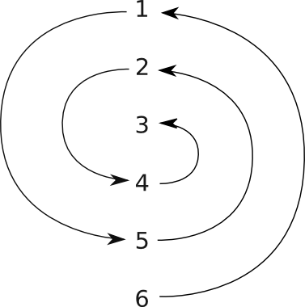
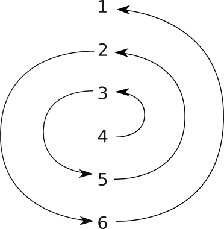

Eclats de vers : Litéra 01 : Rimailleur
Table des matières
1. Fantaisie
La musique est omniprésente en poésie. Qu’elle soit chantée, jouée ou réalisée mentalement par le lecteur, le poème ne serait tout simplement pas complet sans cette voix enchanteresse qui l’accompagne. Elle est le fil conducteur qui le guide, l’onde éclairante qui lui donne forme et consistance. Sans elle, le texte perdrait toute sa saveur, comme une fleur sans parfum ou une rosace sans lumière. La mélodie est au coeur même des syllabes, s’appuyant sur les consonnes et vibrante dans les voyelles. Elle en dit parfois plus long par son intonation que les mots eux-mêmes, gouttelettes d’harmonie qui dessinent leurs cercles concentriques sur le lac du silence. Si le phrasé est intimement lié à la hauteur des sons, la ponctuation est propice à l’inspiration qui, en accumulant l’énergie du souffle, prépare déjà le vers suivant. D’où que l’on regarde, les éléments du langage ne sont que l’expression fervente de ses vagues invisibles. C’est la musique, enfin, qui donne une cohérence au rythme des strophes et à la sonorité des rimes.
D’ailleurs, à une époque où la rime est justement, ou plutôt injustement, devenue le sujet à la mode de tant de raillerie, le jeu de mot rimailleur contenu dans le titre nous offre un retour aux sources vers ses origines. Il est vrai que l’époque classique, en l’imposant suffisante et riche, lui à causé beaucoup de tort. Elle traîne depuis une image de tyran dont elle semble incapable de se dépêtrer. C’est cette image que j’entends ici briser, par un retour aux sources vers l’assonance et ses semblables. Vous voilà donc assurés qu’il ne s’agit pas d’un hommage d’un goût douteux à l’ère de gloire des bouts-rimés, et ce d’autant moins que la rime n’est en définitive que la partie émergée de l’iceberg, un symbole exposé comme figure de proue. C’est en fait tout l’arbitraire de la poésie classique, avec l'interdiction des hiatus, des diphtongues non éludées, ainsi que l’ostracisme de certaines rimes sur une base uniquement orthographique, sans justification phonétique aucune, qui est remis en cause. Vous ne souffrirez donc pas des rigueurs du classicisme dans cet ouvrage. Vous y trouverez cependant de quoi satisfaire votre curiosité : tout bon musicien vous dira qu’avant de savoir composer, il faut apprendre à décomposer. Identifier tous ces moteurs qui propulsent notre imagination dans le ciel étoilé de la créativité, voilà qui est à mon sens une démarche artistique essentielle. Ceci étant, il ne faut évidemment pas les utiliser sans ce fluide insaisissable qui constitue l’essence même de tout art. J’irai même jusqu’à dire qu’utiliser l’un sans l’autre est une erreur, et c’est bien là le sens du double avertissement contenu dans ce titre : si la technique ne peut être ignorée, celle-ci doit provenir de cet ailleurs en perpétuel mouvement qu’est la poésie.
Un des grands malentendus de la versification moderne provient de ce que nombre de nos contemporains rejettent plus ou moins consciemment l’idée de contrainte. Pour preuve, le succès actuel d’une certaine (et trop souvent incertaine) poésie déstructurée. Vous m’excuserez de ne point employer ici l’expression « poésie libre », cette esclavagiste qui enchaîne d’un sous-entendu éloquent ses soeurs de lyre, cette cuistre qui rejoint, par l’ignorance et l’arbitraire, les excès du classicisme dont elle prétend se distancier. Il s’agit d’ailleurs d’une expression erronée, confondant allégrement la notion de « vers libre » avec celle de « vers blanc ». Mais traversons la brume débilitante des modes éphémères et grimpons dans les nues pour tâcher d’y voir clair. Partout, tant dans la nature que dans l’écriture, c’est l’équilibre entre la liberté et la contrainte qui donne forme et consistance aux choses. Puisque nous sommes en altitude, prenons les oiseaux pour exemple : si ceux-ci peuvent voler, c’est autant grâce aux forces internes qui assurent la cohésion de leurs ailes qu’à la liberté de celles-ci ; Icare en sait quelque chose. C’est la contrainte encore qui, lorsqu’elle est mariée au sens artistique, nous pousse à donner vie aux mots afin qu’ils s’ajustent au mieux dans ce creuset prolifique qu’est le vers. Car c’est bien dans ce moule que se forge au fil des siècles le phrasé particulier d’une langue. J’irai jusqu’à affirmer que ce n’est pas à la poésie de se plier au langage, mais au langage de se plier à la poésie.
Ce n’est donc pas un hasard si l’écriture poétique la plus éprouvante se rencontre dans des situations de souplesse ou de rigidité extrême. Sans fil d'Ariane pour la guider, l’immense étendue des possibilités risque de noyer l’oeuvre dans un dédale ; à l’opposé, un éventail trop peu diversifié aura de bonnes chances de donner un aspect mécanique au texte. Que ce soit en déstructuré ou en bouts-rimés, l’effort nécessaire pour éviter ces écueils qui ôtent à une oeuvre tout son intérêt est souvent démesuré. En fait, ces extrêmes ont plutôt tendance à briser l’élan du poète qu’à le propulser. La réputation de ces styles l’illustre d’ailleurs à merveille : la poésie classique est sévère, pompeuse, contorsionniste jusqu’à la préciosité et répète incessamment les mêmes rimes cliché, tandis que le déstructuré consiste à balancer n’importe quels bouts de phrases sur une page, pourvu que les couleurs de l’encre et du papier diffèrent (et encore). Ce sont là des généralisations abusives, car il est réellement possible de réaliser des textes de qualité dans les deux cas. La question est de savoir si tous ces efforts ne seraient pas mieux employés à écrire tout simplement de la poésie, sans se fermer l’esprit sur un courant particulier. Et, s’il faut qu’on examine les différentes écoles, que ce soit au travers d’une démarche qui permette de récolter le bon grain dans chacune d’entre-elles.
Si la poésie déstructurée peut se révéler intéressante, c’est par le biais de l’exploration, car le poète, qui repart de zéro, est implicitement contraint de donner une forme à l’informe, de découvrir une nouvelle construction élégante et harmonieuse à chacune de ses créations, faute de quoi il sombrera lamentablement dans la médiocrité. Afin de ne pas dépenser notre énergie à réinventer continuellement la roue, je vous propose de concentrer nos efforts sur la découverte et le recensement de nouvelles formes poétiques. Ce n’est pas l’ouvrage qui manque car, toutes proportions gardées, l’univers des possibilités littéraires est comparable à une vaste plaine d’amertume saupoudrée ça et là de rares archipels. Plus rares encore y sont les îles où coule la source fraîche d’une poésie à la fois claire et profonde. Au fil des siècles, nos prédécesseurs ont cartographié un nombre conséquent de ces baies aux eaux calmes et à la vague chaleureuse, mais il y a fort à parier qu’un nombre plus impressionnant encore n’a jamais vu l’ancre ou le vaisseau d’aucun capitaine poète. C’est pourquoi je vous propose de nous lancer à leur découverte. Rassurez-vous, notre oreille musicale constitue une boussole fiable entre toutes ; quant à la coque, elle est faite de ce bois solide que l’on rencontre uniquement au coeur des forêts vénérables du bon sens. Non que nous arriverons à fouler chaque plage, mais l’essentiel n’est-il pas d’écouter claquer le vent dans les voiles tout en répondant au chant des flots, l’essentiel n’est-il pas autant dans la quête que dans l’absolu ?
2. Phonétique
2.1. Voyelles et consonnes
Les lettres suivantes sont des voyelles :
A E I O U Y
Toutes les autres lettres de l’alphabet sont des consonnes.
Un mot est composé en alternance de voyelles et de consonnes. Voyelles et consonnes peuvent être isolées ou groupées.
2.2. Voyelles
2.2.1. Vocaliques
Un groupe de lettres formant un son apparenté à celui d’une voyelle est nommé vocalique. Le son associé est appelé son vocalique.
Les vocaliques forment des sons ouverts et faciles à prolonger.
2.2.2. Vocaliques simples
Voici les sons vocaliques simples :
- les voyelles : A, E, I, O, U
- les voyelles modifiées : Â, É, È, Î, Ô, Û
- les groupes formant un son vocalique : AN, IN, ON, AU, EU, OU
Certains de ces sons se présentent sous différentes variantes orthographiques :
| È | = | AI | = | EAI |
| I | = | Y | ||
| AN | = | EN | ||
| IN | = | UN | = | EIN |
| AU | = | EAU |
2.2.2.1. Classification
Classification des sons vocaliques simples :
- nasales : AN, IN, UN, ON
- non-nasales : A, E, I, O, U, É, È, AU, EU, OU
2.2.3. Mouillé
Un son mouillé se forme lorsqu’un son vocalique est fusionné avec un « L ». Exemples :
| Mot | : | ab-EILL-e | jonqu-ILL-e |
| Prononciation | : | abei-ie | jonqui-ie |
2.2.4. Diphtongues
Une diphtongue est un son vocalique complexe où l’on entend sucessivement deux sons vocaliques simples. Exemples :
| décr-UE | gent-IA-ne | j-OIE | s-UI-te | enf-OUI |
2.2.5. Semi-voyelles
Une semi-voyelle est une voyelle entendue fugitivement dans une diphtongue. En voici la liste et quelques exemples :
- demi I = /I : gent-I-ane
- demi O = /O : r-O-i
- demi U = /U : ess-U-i
- demi OU = /OU = /W : OU-i
Lorsqu’un « E » termine une diphtongue, il a la propriété d’allonger en decrescendo la voyelle qui le précède. Exemple :
Demi E = /E : env-IE ~ env-ÎÎÎ
2.3. Consonnes
2.3.1. Consonantiques
Un groupe de consonnes est nommé consonantique. Le son associé est appelé son consonantique.
2.3.2. Consonantiques simples
Voici les sons consonantiques simples, groupés par familles de sons proches :
- B, P
- D, T
- F, PH, V
- M, N, GN
- CH, G (souple), J
- C (dur), K, QU, G (dur)
- C (souple), S, SS, X, Z
2.3.3. Groupes de consonnes
Les groupes de consonnes sont formés d’une consonantique simple ou double, éventuellement escortée d’une consonne auxiliaire :
- fréquemment : L, R, S
- plus rarement : T, M
2.3.4. Classification
- momentanées : B, D, G, C, K, P, T
- prolongeables : F, S, J, CH, R, L
- liquides : L
- sifflantes : S, F
- chuintantes : CH, J
- vibrantes : R
2.4. Syllabe
Une syllabe est un ensemble de lettres qui constituent une unité phonétique.
2.4.1. Analyse
Voici quelques règles permettant de décomposer un texte en syllabes :
- chaque syllabe doit contenir au moins un son vocalique
- la présence d’un son consonantique est optionnelle
- si le texte qui suit débute par plusieurs consonnes
- la première consonne est ajoutée à la fin de la syllabe
- une syllabe peut contenir deux sons consonantiques
- un au début
- un à la fin
La méthode d’analyse consiste donc à :
- examiner le début du texte non analyse
- jusqu’à rencontrer le premier son vocalique
- vérifier s’il faut ajouter une consonne ou pas à la fin
- passer à la syllabe suivante
Voici quelques exemples de décompositions de mots en syllabes :
| parabole | = | pa - ra - bo - le |
| monument | = | mo - nu - ment |
| orage | = | o - ra - ge |
| arbre | = | ar - bre |
| essouffler | = | es - souf - fler |
| éclairer | = | é - clai - rer |
Voici quelques exemples de décompositions de texte en syllabes :
| le nuage avance | = | le - nu - ag’ - a - van - ce |
| la pluie tombe | = | la - plui’ - tom - be |
| l’arbre perd ses feuilles | = | l’ar - bre - perd - ses - feuil - les |
2.4.2. Hiatus
Un hiatus est la rencontre de deux voyelles situées sur deux syllabes consécutives, sans consonne sonore pour les séparer. Exemples :
| abri-I E-nchanté |
| al-O-É-s |
La différence entre diphtongue et hiatus est fort simple : là où les voyelles d’une diphtongue se fondent l’une dans l’autre, les voyelles d’un hiatus se distinguent clairement afin de former deux syllabes.
2.4.3. Synérèse et diérèse
Le fait de prononcer deux vocaliques simples consécutives en une seule syllabe, formant ainsi une diphtongue, se nomme synérèse.
Le fait de prononcer deux vocaliques simples consécutives en deux syllabes se nomme diérèse.
2.5. Élision
L’ élision est un procédé qui consiste à ne pas prononcer une lettre.
La lettre non prononcée est dite lettre éludée ou encore lettre muette.
2.6. Accentuation
L’accent tombe normalement à la dernière syllabe d'un mot. Voici quelques exemples où les syllabes accentuées sont mises en majuscules :
dis-COURS
par-FAIT
2.6.1. Vocalique « E »
On évite en général d’accentuer la vocalique « E ». En conséquence, si un mot contenant au moins deux syllabes a pour dernière vocalique un « E », c’est la syllabe qui précède qui se trouve accentuée, éventuellement complétée de la consonantique qui les sépare.
Exemples :
magni-FIQU-e
em-BRAS-e
Attention : cette règle ne concerne que la vocalique « E », et non pas les vocaliques issues des lettres E accentuées, comme « É » ou « È ». Exemple :
éclai-RÉ
⁂
Si le mot ne contient qu’une syllabe, on est forcés d’accentuer le « E ». C’est le cas dans :
| JE | ME | TE | QUE | ··· |
Cette situation n’étant pas idéale, les monosyllabiques reportent souvent leurs accents sur le mot qui les précède ou sur celui qui les suit. Ceci nous mène à la notion de clitique.
2.6.2. Clitique
Un clitique est un mot ou un groupe de mots qui reporte son ou ses accents sur le mot qui précède ou sur celui qui suit. L’accent se place alors comme si l’ensemble formait un mot composé. Exemples :
| je vais ve-NIR |
| je m’a-CHARN-e |
| que DIS-je ? |
| il nous les DONN-e |
| quelle réalisa-TION ! |
| qu'y PUIS-je ? |
| qui SUIS-je ? |
| peu à PEU |
| qu'en dis-TU ? |
2.6.3. Proclitique, enclitique
Citons deux cas particuliers de clitiques :
- un proclitique est un mot ou un groupe de mots qui reporte son ou ses accents sur le mot qui suit.
- un enclitique est un mot ou un groupe de mots qui reporte son ou ses accents sur le mot qui précède.
2.7. Alphabet phonétique
2.7.1. Voyelles
| Symbole | Valeur en français | Exemple de mots |
|---|---|---|
| a | a court | plat, platte |
| α | a long | bas, pâte |
| ə | e court | le |
| œ | e long | peur |
| e | é | blé, jouer |
| ε | è | bergère, lait, merci |
| i | i | il |
| ɔ | o sec | donner |
| y | u | rue |
| o | au | eau |
| ø | eu | deux |
| u | ou | genou |
| α̃ | an, en | sans, vent |
| ɛ̃ | in sec | matin, brin |
| œ̃ | un ample | lundi, brun |
| ɔ̃ | on | bon, ombre |
2.7.2. Consonnes
| Symbole | Valeur en français | Exemple de mots |
|---|---|---|
| b | b | bonbon |
| k | c dur, k | carat, kayak |
| s | c souple, s nonzézéyant, ss | ceci, salami |
| d | d | dadais |
| f | f, ph | fanion, photo |
| g | g dur | gare |
| ʒ | j, g souple | je, âge |
| h | h aspiré | ha |
| ʔ | h aspiré | hauteur |
| l | l | alors |
| m | m | mare |
| n | n | nounou |
| p | p | pâtre |
| ʀ | r | raison, rare |
| t | t | vitre |
| v | v | voyage |
| z | z, s prononcé z | maison, zozo |
| ʃ | ch | chaleur |
| ɲ | gn | gagner, montagne |
| ɳ | ng | camping |
2.7.3. Semi-consonnes
| Symbole | Valeur en français | Exemple de mots |
|---|---|---|
| j | i mouillé | paille, émail, pied |
| w | demi ou | oui |
| ɥ | demi u | huile, lui |
3. Métrique
3.1. Introduction
La métrique traite de l’agencement des vers. Un agencement particulier est appelé mètre. Il existe plusieurs catégories de métriques :
- la métrique syllabique se base sur le nombre de syllabes sonores.
- la métrique quantitative se base sur le concept de pied, suite de syllabes dont le caractère long ou bref est déterminé.
- la métrique accentuelle est semblable à la métrique quantitative, mais se base sur l’opposition entre syllabes accentuées et atones, plutôt que sur la distinction entre longues et brèves.
Le français utilise une métrique syllabique. La métrique quantitative est typique du grec et du latin, tandis que l’anglais utilise une métrique accentuelle.
Cet ouvrage traite principalement de la poésie fondée sur la métrique syllabique. Une section est toutefois consacrée à la métrique quantitative, non seulement parce qu’elle est intéressante en elle-même, mais également parce que certaines de ses notions peuvent être transposées à la métrique syllabique.
3.2. Vers
Un vers construit en respectant les principes de la métrique syllabique est appelé vers syllabique.
Un vers construit en respectant les principes de la métrique quantitative est appelé vers quantitatif.
4. Métrique syllabique
4.1. Introduction
La métrique syllabique traite du nombre de syllabes sonores, appelé mètre. Pour déterminer le mètre d’un vers, il faut donc distinguer les syllabes sonores des syllabes muettes. Je vous propose dans ce qui suit des règles de décompte que j’ai voulues proches d’une esthétique musicale tout en demeurant suffisamment souples et adaptées à la prononciation moderne.
La plupart des syllabes orthographiques se prononcent et comptent pour une syllabe sonore. Il existe toutefois certaines exceptions à cette règle : certaines syllabes ne se prononcent pas, d’autres peuvent compter pour deux syllabes sonores.
4.2. « E » muets
Les « E » suivant sont muets et n’interviennent donc pas dans le décompte :
- les « E » placés à la dernière lettre d’un mot et précédant :
- une voyelle
- un « h » muet suivi d’une voyelle
- les « E » constituant la dernière lettre d’un vers
- les « E » placés à la dernière syllabe d’un vers et uniquement suivis de consonnes muettes
Exemples :
- Les « E » placés à la dernière lettre d’un mot et précédant :
- une voyelle : sereinE éclosion se prononce se-rein’ é-clo-sion
- un « h » muet : longuE heure se prononce longu’ heu-re
- Les « E » constituant la dernière lettre d’un vers : [···] menthE se prononce [···] menth’
- Les « E » placés à la dernière syllabe d’un vers et uniquement suivis de consonnes muettes : [···] matinES se prononce [···] ma-tin’
Les vers :
Les arbres alanguis se chauffent les racines
Quand l’aurore aux yeux d'ange effleure les collines.
se composent donc chacun de douze syllabes sonores :
Les ar-bres a-lan-guis se chauf-fent les ra-cin’
Quand l’au-ror’ aux yeux d'ang’ ef-fleu-re les col-lin’.
4.2.1. Exceptions
Les « E » des mots monosyllabiques (exemples : JE, NE, QUE, ...)
précédant une voyelle ou un « h » muet sont, au choix de l’auteur :
- sonores et comptent pour une syllabe sonore
- muettes et ne comptent pas ; l’usage est alors de signaler l’élision par l’orthographe
Exemples :
- prends-LE au mot
- L’arbre
En fin de vers, les « E » des mots monosyllabiques sont, au choix de l’auteur :
- sonores et comptent pour une syllabe sonore
- muettes et ne comptent pas
Exemples :
- [···] un arbre que JE
- [···] n’ai-JE prononcé comme [···] n'ai-J’, ce qui donne un jeu de mot avec [···] neige
4.3. Combinaison de voyelles
Les combinaisons :
- É, I, O, U, OU + Vocalique (comme dans myrIAde)
- Vocalique + E (comme dans envIE)
peuvent se prononcer en une ou deux étapes, au choix de l’auteur. Exemples :
- my-r/IA/-de ou my-r/I-A/-de
- en-v/IE/ ou en-v/I-E/
Synérèse et diérèse sont donc autorisées. Il semble d’ailleurs impossible de dégager une quelconque loi de la prononciation usuelle, qui permettrait de distinguer les cas où l’une ou l’autre est la plus souhaitable. Les seuls principes suivis avec un tant soit peu de régularité sont les suivants :
- lorsque la synérèse résulte en une syllabe contenant deux consonnes sonores ou plus, elle est habituellement évitée afin de ne pas provoquer un effet de surcharge
- on évite habituellement la diérèse dans les mots longs, afin d’éviter qu’ils ne deviennent interminables
- la synérèse procure un effet de précipitation
- la diérèse procure un effet d’ampleur
Mais ici encore, l’oreille est seule juge.
4.3.1. Précision
Précisons que les associations de voyelles formant des sons :
- vocaliques simples : AU (= EAU), EU, OU, IN (= EIN, UN), AI (= È), EI (= È),
... - mouillés : UEIL, EUIL, OUIL (exemple : accUEIL, cerfEUIL, fenOUIL)
se prononcent en une étape et comptent bien entendu pour une unique syllabe sonore.
4.4. Élisions optionelles
4.4.1. Entre voyelles
L’époque médiévale admettait les élisions de toute voyelle précédant une autre voyelle. Exemples :
| Ma amie | ⟼ | M’amie |
| Il le envie | ⟼ | Il l’envie |
| Que il | ⟼ | Qu’il |
| Se admirer | ⟼ | S’admirer |
| Si il | ⟼ | S’il |
Certaines de ces élisions sont passées dans la langue, d’autres sont devenues désuètes. Bien utilisées, elle peuvent produire de jolis effets. Il est toutefois conseillé de signaler une élision inhabituelle par l’orthographe.
4.5. Nomenclature
Voici la nomenclature des vers syllabiques, en fonction du nombre de syllabes sonores :
| Mètre | Nom |
| 4 | Tétrasyllabe |
| 5 | Pentasyllabe |
| 6 | Hexasyllabe |
| 7 | Heptasyllabe |
| 8 | Octosyllabe |
| 9 | Ennéasyllabe |
| 10 | Décasyllabe |
| 11 | Endécasyllabe |
| 12 | Dodécasyllabe |
4.6. « E » artificiellement muets
Il arrive qu’on souhaite rendre muet un « E » interne au vers afin d’en améliorer la sonorité. Dans cet exemple :
Sans doute, les étoiles ont voyagé depuis
on a envie de rendre muet le « E » final d’étoiles, afin de transformer le vers en :
Sans doute, les étoil’ ont voyagé depuis
La solution la plus évidente consiste à scinder le vers :
Sans doute, les étoiles Ont voyagé depuis
Toutefois, si l’on souhaite conserver la présentation du vers original sur une seule ligne, on peut signaler la scission par un signe typographique, comme par exemple un « | ». Notre exemple devient alors :
Sans doute, les étoiles | ont voyagé depuis
et sera prononcé :
Sans doute, les étoil’ ont voyagé depuis
Il est bien entendu possible d’inclure à cette notation la majuscule propre aux débuts de vers :
Sans doute, les étoiles | Ont voyagé depuis
5. Métrique quantitative
5.1. Introduction
La métrique quantitative se base sur la notion de pied, chaque pied étant constitué de plusieurs syllabes. Les syllabes sont de deux types :
- longues
- courtes
En métrique gréco-latine, l’accent est donc marqué par la longueur de certaines syllabes. En poésie comme en musique, il existe bien entendu d’autres méthodes permettant de mettre en relief certains éléments : intensité, hauteur, etc. On peut donc voir la métrique accentuelle, basée sur l’intensité sonore des syllabes, comme un cas particulier de métrique quantitative. Nous considérons donc comme synonymes :
- syllabe longue et syllabe accentuée
- syllabe courte et syllabe non accentuée, atone
Cette similitude nous amène à définir la distinction plus générale entre syllabes lourdes et légére :
- 1 syllabe lourde = 1 syllabe longue ou accentuée
- 1 syllabe légère = 1 syllabe courte ou atone
Nous utilisons les symboles suivants :
| — | Syllabe lourde |
| ∪ | Syllabe légère |
| ⊥ | Syllabe quelconque |
5.2. Notions
5.2.1. Équivalence
En métrique quantitative, on considère qu’une syllabe longue vaut deux brèves. La généralisation de ce concept à la métrique accentuelle nous amène à définir une unité appelée équivalent-léger et notée EL. Comme son nom l’indique, cette unité est équivalente à :
- 1 syllabe légère
- 1/2 syllabe lourde
Une syllabe légère correspond donc à 1 EL et une syllabe lourde à 2 EL. Par exemple, le pied suivant :
— ∪
contient une syllabe lourde et une légère. La première valant 2 EL et la seconde 1 EL, le pied comporte en tout 3 EL.
5.2.2. Dipode
Un dipode est un ensemble constitué de deux pieds.
5.3. Transformations
Les transformations permettent de modifier un mètre afin d’en produire un nouveau. Il ne s’agit donc pas de transformer un vers en particulier, mais un schéma rythmique.
5.3.1. Substitution
Il est possible de substituer certaines syllabes au sein d’un pied :
- la contraction opère par fusion, en remplaçant deux syllabes légères contiguës par une lourde
- la résolution opère par scission, en remplaçant une syllabe lourde par deux syllabes légères contiguës
Voici un exemple de contraction :
| — ∪ ∪ | ⟼ | — — |
Voici un exemple de résolution :
| — ∪ | ⟼ | ∪ ∪ ∪ |
5.3.2. Anaclase
L’anaclase consiste à permuter une syllabe lourde avec une syllabe légère.
Lorsque l’anaclase permute la dernière syllabe d’un pied avec la première syllabe du pied suivant, on obtient un effet analogue à la syncope musicale. Exemple :
| — ∪ ∪ — ∪ ∪ | ⟼ | — ∪ — ∪ ∪ ∪ |
5.3.3. Anceps
L’anceps est une syllabe qui peut être lourde ou légère, au choix du poète. L’utilisation principale de l’anceps est en fin de vers, où une syllabe légère peut être transformée en syllabe lourde, mais l’anceps se rencontre aussi au début ou en milieu de vers.
5.3.4. Catalexe
La catelexe est l’omission de la dernière syllabe d’un pied. La nouvelle dernière syllabe devient alors anceps, et peut donc être considérée comme lourde ou légère. L’agencement :
— ∪ ∪
deviendra donc par exemple :
— ∪
et pourra être transformée afin d’avoir une syllabe lourde en dernière position :
— —
La catalexe peut souligner un point métrique important : la fin d’un vers, la fin d’une strophe, etc.
Une transformation analogue consiste à supprimer la première syllabe d’un vers, la nouvelle première syllabe devenant anceps. On parle alors d’*acéphalie*.
5.4. Nomenclature
5.4.1. Pieds
| Nom | Structure | Équivalent léger |
|---|---|---|
| pyrrhique, dibraque | ∪ ∪ | 2 |
| trochée | — ∪ | 3 |
| iambe | ∪ — | 4 |
| spondée | — — | 4 |
| tribraque | ∪ ∪ ∪ | 3 |
| dactyle | — ∪ ∪ | 4 |
| amphibraque | ∪ — ∪ | 4 |
| anapeste | ∪ ∪ — | 4 |
| antibacchée | — — ∪ | 5 |
| crétique, amphimacre | — ∪ — | 5 |
| bacchée | ∪ — — | 5 |
| molosse | — — — | 6 |
| tétrabraque, procéleusmatique | ∪ ∪ ∪ ∪ | 4 |
| péon premier | — ∪ ∪ ∪ | 5 |
| péon second | ∪ — ∪ ∪ | 5 |
| péon troisième | ∪ ∪ — ∪ | 5 |
| péon quatrième | ∪ ∪ ∪ — | 5 |
| ionique majeur | — — ∪ ∪ | 6 |
| ionique mineur | ∪ ∪ — — | 6 |
| choriambe | — ∪ ∪ — | 6 |
| antipaste | ∪ — — ∪ | 6 |
| diiambe | ∪ — ∪ — | 6 |
| ditrochée | — ∪ — ∪ | 6 |
| epititrite premier | ∪ — — — | 7 |
| epititrite second | — ∪ — — | 7 |
| epititrite troisième | — — ∪ — | 7 |
| epititrite quatrième | — — — ∪ | 7 |
| dispondée | — — — — | 8 |
5.4.2. Vers
| Nom | Nombre de pieds |
|---|---|
| Monomomètre | 1 |
| Dimètre | 2 |
| Trimètre | 3 |
| Tétramètre | 4 |
| Pentamètre | 5 |
| Hexamètre | 6 |
| Heptamètre | 7 |
5.5. Structures
Les schémas les plus simples s’obtiennent en répétant un même pied tout au long du vers. Par exemple, un pentamètre dactylique sera composé de cinq dactyles :
— ∪ ∪ — ∪ ∪ — ∪ ∪ — ∪ ∪ — ∪ ∪
5.5.1. Vers épique
L’hexamètre dactylique est le vers épique par excellence :
— ∪ ∪ — ∪ ∪ — ∪ ∪ — ∪ ∪ — ∪ ∪ — ∪ ∪
En utilisant la catalexe, on obtient la variante :
— ∪ ∪ — ∪ ∪ — ∪ ∪ — ∪ ∪ — ∪ ∪ — —
5.5.2. Distique élégiaque
Le distique élégiaque se compose d’un hexamètre dactylique et d’un pentamètre dactylique symétrisé :
— ∪ ∪ — ∪ ∪ — ∪ ∪ — ∪ ∪ — ∪ ∪ — ∪ ∪ — ∪ ∪ — ∪ ∪ — — ∪ ∪ — ∪ ∪ —
5.5.3. Vers anacréontique
Le vers anacréontique est semblable au dimètre ionique mineur :
∪ ∪ — — ∪ ∪ — —
les voyelles centrales étant permutées :
∪ ∪ — ∪ — ∪ — —
L’hémiambe est un vers anacréontique où le premier pied a subi une acéphalie :
⊥ — ∪ — ∪ — —
6. Hiatus
6.1. Introduction
La versification classique considère comme blessants pour l’oreille les hiatus intervenant à la frontière de deux mots, mais la réalité est nettement plus nuancée. En effet, suivant leur accentuation et la position qu’ils occupent dans le vers, certains hiatus se font nettement plus discrets que d’autres, et sont donc parfaitement acceptables. Quant aux plus abrupts d’entre-eux, c’est à l’oreille de décider s’ils donnent du caractère au vers, ou s’ils en détruisent la sonorité. Mais, hiatus ou pas, lorsqu’un vers sonne faux, il est toujours préférable de le biffer et d’en écrire un autre.
6.2. Clitique
Les hiatus intervenant au sein d’un groupe de mots formant clitique sont naturellement discrets, car au moins une des deux voyelles n’est pas accentuée. Exemples :
il y a
Ce constat est tout à fait cohérent ; il suffit de se rappeler qu’au niveau de l’intonation, un clitique est assimilable à un mot composé. On se retrouve donc dans une situation similaire à celle de l’hiatus interne, qui est parfaitement acceptable, même en poésie classique.
6.3. Caractère
Voici un exemple de vers ou les hiatus mettent le sens en relief :
L’haïssable hiatus y ébrèche sa hache
6.4. Liaison
Dans le cas où un hiatus heurte la sonorité, rien ne nous empêche d’intercaler une consonne de liaison. Un « z » fluide et zézéyant, comme dans « J’ai-z-ouvert le coffre » a au moins autant de caractère que le « t » de « a-t-il payé ses impôts ? ». La lettre « t » toute en rondeur du « j’ai-t-été au bois » n’est-elle pas également mignonne dans son ambiguité ?
7. Enjambements
7.1. Introduction
L’enjambement est un décalage entre la fin d’un vers, d’un hémistiche ou d’une strophe par rapport à la structure de la phrase. En voici un exemple :
Lune d’or, je te suis
Reconnaissant de ta lumière.
7.2. Rejet
Le rejet est une forme d’enjambement où un élément court est isolé au début du second vers :
Le moindre coup de vent, la plus petite goutte
De pluie leur suffisait pour se découvrir libres.
7.3. Contre-rejet
Le contre-rejet est une forme d’enjambement où un élément court est isolé à la fin du premier vers :
La lune et le soleil s’embrassaient. Un nuage
Translucide voilait la flamme de leur rage.
8. Désinences
La désinence d’un vers est constituée de sa dernière vocalique sonore ainsi que des éventuelles consonnes sonores qui la suivent. En l’absence de « E » à la dernière syllabe, on trouve aisément la désinence d’un mot. Exemples :
| [···] | aim-É |
| [···] | roug-EUR |
| [···] | empr-UNT |
Par contre, lorsqu’un « E » est présent, il est muet car situé à la fin du vers. La dernière vocalique sonore est donc celle qui précède immédiatement ce « E ». En y ajoutant les éventuelles consonnes sonores, on obtient la désinence. Voici quelques exemples où les « E » muets sont mis entre parenthèses :
| [···] | escarb-OUCL(e) |
| [···] | solst-IC(e) |
| [···] | pl-AIN(e) |
| [···] | compl-AINT(e) |
8.1. Vocaliques et consonantiques
On différencie les désinences :
- Vocaliques : aucune consonne sonore n’est présente derrière le dernier son vocalique
- Consonantiques : au moins une consonne sonore est présente derrière le dernier son vocalique
Ces définitions impliquent que l’éventuelle présence d’un « E » muet ou de consonnes muettes ne modifie pas le caractère vocalique ou consonantique d’un mot.
En voici quelques exemples :
- désinences vocaliques : été, marrant, étain, flanc, son, étang,
roseaux, flou, envie, roue, superflues
... - désinences consonantiques : frise, soleil,
espace, plaine, églantine, songe,
...
8.2. Genre
On différencie les désinences :
- Masculines : aucun « E » muet n’est présent dans la syllabe finale du mot
- Féminines : un « E » muet est présent dans la syllabe finale du mot
En voici quelques exemples :
- désinences masculines : été, soleil, étain, lourd, son, étang, eau, flous
... - désinences féminines : frise, merveille, lourde, sonne, étanches, liquides,
...
9. Rimes
9.1. Régulières
9.1.1. Introduction
La rime est constituée de désinences phonétiquement identiques placées à la fin d’au moins deux vers différents. Exemple :
La brume a déroulé ses rubans de coton
Les vagues des glaciers submergent les glacières
Et bientôt guidée par l'étrange partition
La rigueur hivernale ouvre le frigidaire
Dans la strophe ci-dessus, on a les rimes :
| cot-ON | & | partiti-ON |
| glaci-ÈRES | & | frigid-AIRE |
On voit que l’orthographe n’est pas nécessairement identique, seule la sonorité compte.
9.1.2. Appui
On peut enrichir une rime en la faisant précéder d’un appui, c’est-à-dire d’une lettre ou d’un groupe de lettres de sonorité identique, comme le « R » dans l’association :
éc-R-ou & frouf-R-ou
où le « V » dans :
Mais le temps change si V-ite
L’azur se zèbre d’éclairs
Et les arcs-en-ciel in-V-itent
Quelques ondées passagères
Dans cet exemple, on a un « L » en appui, ainsi que les lettres « S » et « Z », différentes mais de sonorité identiques :
La pluie bat les carreaux les fauteuils se ba-L-ancent
Au rythme des cahots qui battent la me-S-ure
Le thé ne fume plus la tasse s’en bat L’anse
Un saxophone d’or improvise l’a-Z-ur
9.1.2.1. Déplacement de l’appui
On peut déplacer les lettres d’appui vers l’avant ou vers l’arrière. Exemples :
| fes-T-in | & | T-aquin |
| chu-CH-otis | & | ga-CH-is |
9.1.3. Richesse
La richesse d’une rime est fonction du nombre d’éléments sonores (vocaliques ou consonantiques) identiques. Ainsi, on distingue les rimes :
- Pauvres : un seul élément sonore est identique
- Suffisantes : deux éléments sonores sont identiques
- Riches : trois éléments sonores ou plus sont identiques
En voici quelques exemples :
- rime pauvre
- habit-É & souffl-É
- bat-EAU & carr-EAU
- rime suffisante
- habi-TÉ & emprun-TÉ
- fébr-ILE & vig-ILE
- rime riche
- hab-ITÉ & abr-ITÉ
- dé-MODE & com-MODE
Qu’on ne se méprenne pas sur cette étrange nomenclature : les rimes pauvres sont aussi respectables et utiles que les autres. L’excès de richesse dans la rime ôte même de l’intérêt au vers. Qu’on songe au jeu des cadences musicales, où l’accord consonant est généralement précédé d’un ou de plusieurs accords dissonants afin de créer un effet de relaxation. En poésie, la consonance finale correspond à la rime, tandis que les syllabes précédentes correspondent aux accords de préparation. Une rime pauvre réussie est donc infiniment préférable à une rime trop riche qui fausserait la cadence du vers.
Les rimes suffisantes et riches on bien entendu leur intérêt. Cependant, ici comme ailleurs, il est important de veiller à l’harmonie du vers, à la variété des sonorités, et donc à l’équilibre entre les différentes catégories de rimes.
Le fond de la question est celui-ci : prend-on la plume pour prouver qu’on est capable de produire des rimes riches en série, au risque d’en faire trop ? Ou prend-on la plume pour écrire de la poésie, sans se soucier d’un qu’en-dira-t-on mal assorti aux élégantes chevelures des Muses ?
9.1.4. Types
Une rime vocalique est constituée de deux désinences vocaliques.
Une rime consonantique est constituée de deux désinences consonantiques.
En voici quelques exemples :
- rime vocalique
- gen-OU & froufr-OU
- ét-ANG & march-AND
- rime consonantique
- sol-EIL & par-EIL
- fl-EUR & douc-EUR
Une rime masculine est constituée de deux désinences masculines.
Une rime féminine est constituée de deux désinences féminines.
En voici quelques exemples :
- rime masculine
- écl-AIR & fl-AIR
- gen-OU & s-Ou
- rime féminine
- ond-INE & gélat-INE
- nu-AGE & riv-AGE
9.1.5. Varier la sonorité
Historiquement, la règle classique qui rend obligatoire l’alternance de rimes masculines et féminines provient d’un temps où l’on prononçait les « E » placés:
- à la dernière lettre d’un vers
- à la dernière syllabe d’un vers et uniquement suivis de consonnes muettes
Il fallait alors varier le genre des rimes afin d’éviter qu’elles deviennent monotones. En prononciation moderne, ces mêmes « E » étant muets, l’alternance n’est plus nécessaire. Bien entendu, les « E » muets, en allongeant la vocalique qui précède, en donnant une impression de fluidité là où les désinences masculines sont plus sèches, introduisent toujours une nuance dans la prononciation. Mais ces nuances sont trop légères pour considérer qu’elles provoquent une rupture phonétique franche. Pour prendre une analogie musicale, la rime :
| scène | & | mène |
est un intervalle d’unisson, le plus simple et le plus exact, tandis que :
| choir | & | mâchoire |
est une octave, une quinte ou une tierce. Voir ces intervalles comme de simples approximations de l’unisson serait réducteur : ils ont leur caractère propre, et sont tout aussi harmonieux. Notons également que l’alternance ne garantit pas toujours un contraste phonétique. Le cas des rimes « clair, éclair, claire, éclaire » nous montre au contraire qu’il ne suffit pas de modifier le genre des rimes, d’autres facteurs pouvant influencer leur sonorité. Le souci de diversifier cette sonorité, que ce soit à l’intérieur ou en fin de vers, est par contre tout à fait légitime. En poésie comme en musique, un principe universel consiste à explorer d’infinies variations tout en maintenant des repères quasi constants ou évoluant lentement. L’association de refrains et de couplets dans la chanson en est un exemple frappant.
Pour conclure, si vous souhaitez prononcer vos vers à l’ancienne, l’alternance du genre pourra vous être utile. Dans le cas contraire, vous pouvez ignorer ce principe, l’appliquer ou utiliser une autre forme de variation des rimes. Certains auteurs alternent rimes vocaliques et consonantiques. Il est encore possible d’organiser les rimes suivant d’autres agencements que l’alternance. En effet, cette dernière peut être schématisée par :
A B A B A B ···
où A et B désignent deux types de rimes (masculines et féminines, vocalique et consonantique, etc). Voici un autre exemple d’organisation :
A B B A A B B A A B B A ···
qui consiste à faire entendre un jeu de rimes de type A, deux jeux de rimes de type B, un autre jeu de rimes de type A, et la boucle est bouclée. Nous verrons plus en détail d’autres exemples en abordant les strophes. Les solutions qui y sont présentées peuvent être aisément transposées aux types de rimes.
9.1.6. Variété
Les mots associés dans une rime ont par définition des désinences phonétiquement semblables. Les traités de versification recommandent d’introduire de la variation dans cette similitude en jouant sur les paramètres suivants :
- sens
- nombre de syllabes des mots qui contiennent la rime
- type grammatical
- place dans la phrase (fonction grammaticale)
...
Il n’est pas nécessaire que tous ces paramètres diffèrent pour produire une rime de qualité. Par exemple, si le type grammatical est identique, on variera la fonction grammaticale, et ainsi de suite.
Illustrons à présent ce principe. L’association :
| beige | & | sortilège |
procure une variété au niveau du sens, du nombre de syllabes qui les compose et du type grammatical (adjectif et nom). Par contre, dans :
| rugissant | & | mugissant |
le sens est proche, le nombre de syllabes est identique, tout comme le type grammatical (participe présent). On se rend compte que la rime qui en résulte est a priori un peu plate. Attention aussi à ne pas faire entendre de rimes dont un mot est le négatif de l’autre. Par exemple, l’association :
| ami | & | ennemi |
se révèle souvent un peu trop prévisible. Bien entendu, un contexte particulier pourrait mettre ces exemples en valeur. Gardons ces conseils en mémoire, mais n’en faisons pas une généralité.
9.2. Floues
Les rimes floues, ou rimes approximatives ou encore rimes impressionnistes, sont composées de désinences aux sonorités proches et qui s’ajustent harmonieusement :
Rose noire
Rose rouge
Qui se croisent
Souffle court
············
L’atmosphère
Est épaisse
Air de glaise
Plus de lest
Les rimes approximatives permettent d’allier variété et constance à la désinence des vers. Les voyelles et les consonnes qui les composent restent souvent proches, mais ce n’est évidemment pas impératif.
9.2.1. Ordre
L’ordre dans lequel sont agencées les désinences d’une rime floue n’est pas anodin. Il arrive souvent qu’une de ces désinences produise un effet conclusif plus marqué lorsqu’elle est placée au dernier des vers formant la rime. Cela arrive lorsque cette désinence conclusive :
- procure une impression de détente, de relaxation
- semble compléter les autres
Voici quelques exemples de relaxation :
C’est depuis lors qu’ils eff-ACENT
Des piliers de tables r-ASES
Des ribambelles de f-IFRES
Couvrent les r-IVES
Les murs se crev-ASSENT
De ruines sans ÂGE
Voici quelques exemples de complétion :
Ronge le fr-EIN
De nos étr-EINTES
Près de l’ét-ANG
Dressons l’att-ENTE
Un chant marin sublimin-AL
Hante le s-ABLE
Aurait-il p-EUR ?
C’est donc un pl-EUTRE !
9.2.2. De l’exactitude des rimes
Certains auteurs clament à qui veut l’entendre qu’une rime qui se respecte doit être difficile à trouver, et par voie de conséquence riche et exacte. Rien n’est plus faux ! Seule la sonorité de l’ensemble peut et doit entrer en ligne de compte : la rime est-elle agréable, inventive, adaptée au contexte ? Voilà la seule question que le poète doit se poser. Certaines rimes pauvres ou floues sont du meilleur effet, et il serait dans ce cas de la pire vanité d’utiliser des rimes richissimes pour impressionner la galerie ; une telle vanité n’a rien à voir avec la poésie.
On ne compte malheureusement plus les traités de versification où le rédacteur, qui pense légitimer ce genre d’aberrations par des considérations musicales, prouve tout au long des pages qu’il n’a pas étudié sérieusement la question. Sans même ouvrir un traité de composition, une écoute attentive de la plus humble des chansons révèle un assemblage de sonorités qui varient constamment. Si les points de repère sont bien présents (mesure, temps, rythme harmonique, etc), les thèmes évoluent sans cesse, et une répétition trop exacte tombe même à plat. Les traités d’harmonie interdisent d’ailleurs des répétitions de quinte dans des accords consécutifs, car cette consonance est considérée comme trop évidente. Si le puritanisme classique avait creusé la question, il ne nous aurait pas ainsi privé pendant des siècles des infinies nuances que procurent les rimes approximatives.
Choisissez donc simplement la rime qui s’adapte le mieux à ce que vous désirez exprimer et, qu’elle soit exacte ou non, la poésie vous en sera reconnaissante.
9.3. Assonances et allitérations
9.3.1. Assonances
Une assonance consiste à répéter le même son vocalique. Elle peut intervenir à l’intérieur d’un vers, comme le « I » dans ce vers de Racine :
Tout m’affl-I-ge et me nu-I-t et consp-I-re à me nu-I-re
Elle peut également servir de rime approximative. Une même sonorité vocalique est alors répétée à la fin d’au moins deux vers différents, comme le « om/on » dans cet exemple :
La lueur s-OM-bre
Doucement s-ON-ge
9.3.2. Allitérations
Une allitération consiste à répéter une même consonne ou un même groupe de consonnes. Elle peut intervenir à l’intérieur d’un vers, comme le « t » dans ce vers de Valéry :
Elle n’écou-T-e ni les gou-TT-es dans leurs chu-T-es
Mais elle peut également servir de rime approximative. Une même consonne ou un même groupe de consonnes est alors répétée à la fin d’au moins deux vers différents. On peut utiliser l’allitération pour mettre en évidence les variations des voyelles auxquelles elle est associée, comme dans cet exemple :
La lueur som-BR-e
De fin décem-BR-e
Adopte un tim-BR-e
D’oiseau lugu-BR-e
9.3.3. Combinaisons
Les assonances sont souvent combinées aux allitérations. On peut même réunir voyelles et consonnes à la fin du vers pour former la rime, comme dans cet exemple de Valéry, qui joue sur le « I » et le « D » :
S’eff-I-le, on-D-ule, D-ort par le D-él-I-ce v-I-D-e
9.3.4. Rapprochement
L’oreille a tendance à rapprocher les mots porteurs d’une sonorité commune. Un groupe de mots se forme alors, et leurs sens se combinent afin de former une vision parallèle à celle de la lecture cursive, naturelle, du vers. Assonances et allitérations peuvent donc servir à créer une autre dimension dans un poème.
9.4. Coupées
Il s’agit de couper un mot en deux de telle sorte qu’il chevauche la fin d’un vers. Exemple :
Surgissant comme un tigre
Piqué par un ÉPIGR-
AMME, il reprit sa plume
9.5. Enjambées
Il s’agit de compléter la sonorité de la rime au vers suivant. Exemple :
Une vague de brume inondait le ruiss-EAU
B-alloté d’un murmure et du rire de l’AUBE
On dispose de la notation alternative :
Une vague de brume inondait le ruiss-EAU B-
alloté d’un murmure et du rire de l’AUBE
9.6. Enchevêtrées
Il s’agit d’entrecroiser les sonorités des voyelles et des consonnes en fin de vers. Il en existe différents types, suivant que les terminaisons sont vocaliques (V) ou consonantiques (C), et suivant que l’on joue sur des consonnes situées devant (xV, xC) ou derrière (Cx) les voyelles. Le tableau ci-dessous donne un exemple de chaque type :
| Type | Rime 1 | Rime 2 | Rime 3 | Rime 4 |
|---|---|---|---|---|
| xV xV | -du | -fau | -fu | -dau |
| xC xV | -cesse | -ri | -resse | -ci |
| Cx xV | -ègle | -tan | -ète | -glan |
| xC xC | -tine | -vage | -vine | -tage |
| Cx xC | -ange | -brile | -ambre | -gile |
| Cx Cx | -imble | -oubre | -imbre | -ouble |
Voici un cas concret :
Irriguée de vin CH-AUD
Étuves de l’hi-V-ER
Dénouant l’éche-V-EAU
Des nuages de CH-AIR
9.7. Berrychonnes
Dans le cas de la rime berrychonne, la fin du premier vers fournit les voyelles et la fin du deuxième les consonnes de la syllabe finale observée au troisième vers. Un exemple :
Vite courons aux champs fleur-I-s
Avant que les fleurs ne s’y fa-N-ent
Et que l’oiseau quitte le N-I-d
L’ordre d’apparition des composantes peut évidemment être modifié. On peut aussi ajouter un quatrième vers associé en choisissant d’autres voyelles et consonnes dans les terminaisons des deux premiers vers. On obtient alors une double berrychonne :
Vite courons aux champs fleu-R-is
Avant que les fleurs ne s’y f-A-nent
Que leur reste-t-il dans les b-R-A-s
Quand l’oisillon quitte le nid ?
9.8. Aragoniennes
Je la nomme ainsi en l’hommage d'Aragon qui associe, dans un poème du recueil Le fou d'Elsa, des terminaisons vocaliques avec des terminaisons consonantiques semblables. Exemple :
A la surface de l’étang
Nous élèverons d’autres temples
De quelques jets d’eau et de pierre
Où ricocheront nos reflets
9.9. Charades
La rime charade consiste à décomposer un mot clef en syllabes, ces syllabes étant ensuite disposée une par une à la fin de vers consécutifs. Le mot clef peut être présent ou implicite. Un exemple :
Leur vaisseau déri-VA
Quand la voile, stu-PEUR,
Aperçut un VA-PEUR
9.10. Équivoquées
La rime équivoquée consiste en un calembour ou un jeu de double sens en fin de vers. Un exemple :
Tu entres là
Dans l’entrelacs
9.11. Anagrammes
La rime anagramme, comme son nom l’indique, consiste à choisir deux mots composés des mêmes lettres (ou presque) et ayant même terminaison, comme par exemple :
Nous laisserons filer l’oseille
Dans une attraction sans CARDAN
Couchés auprès d’un vieux CADRAN
Sur les galets bleus de soleil
9.12. Normandes
La rime normande consiste à faire rimer deux mots dont les syllabes finales présentent la même orthographe mais se prononcent différemment, comme dans mer / aimer. L’effet est en général assez terne, mais il peut devenir comique dans la mesure où il force le lecteur à prononcer différemment le second mot rencontré. On peut même imaginer d’appliquer le même principe à des mots dont les orthographes des syllabes finales ne sont plus rigoureusement identiques. Un petit exemple :
Et sur ton teint
De sauvagine
La rime en -in de « teint » nous guide vers une seconde lecture de « sauvagine » en « sauvagin ».
9.13. Identiques
Les sévères règles classiques nous recommandent d’accoupler par la rime des mots éthymologiquement et grammaticalement différents. Il est vrai que cela peut créer un effet de surprise, mais n’en faisons pas une généralité. N’hésitons pas à accoupler des mots semblables, voire même identiques :
Le flou ne mordra pas, il est double naissance,
Pur magma créatif méprisant l’impossible ;
Il est le cri, la peur, la joie d’une naissance
Mais nier l’intuition c’est la rendre impossible.
9.14. Néologiques
Si vraiment vous ne trouvez pas de mot satisfaisant, inventez-le :
Je l’ai vu le néant, oui j’en ai fait mon scrible,
Tiré tout l’arsenal, bordées de boulets rouges.
Tous sombrés corps et bien, oubliés dans les douges,
Saignés dieu sait pourquoi : le mal n’est pas fusible.
Les néologismes, ici les mots-valises :
| scribe + crible + cible | ⟼ | scrible |
| douve + rouge | ⟼ | douge |
sont là pour ça.
9.15. Déclinées
Il s’agit d’une rime où au moins l’une des terminaisons appartient à un mot décliné : verbe conjugué, adverbe, ou autre. Exemple :
Dans l’encre délivrée les strophes s’engouffrèrent,
Le délire appelant son suivant comme un frère.
10. Coupes et césures
10.1. Coupes
Les vers courts, jusqu’à huit syllabes, sont subdivisés en unités rythmiques par une ou plusieurs pauses très légères appelées coupes. Par analogie avec les métriques accentuelles et quantitatives, ces unités rythmiques sont appelées pieds. Les coupes (notées « / ») peuvent survenir aussi bien entre deux mots qu’entre deux syllabes d’un même mot. On appelle donc pied la partie d’un vers comprise entre :
- deux coupes
- le début du vers et la première coupe
- la dernière coupe et la fin du vers
Le plus élégant est de disposer les coupes aux pauses naturelles de la phrase, à la frontière de deux syntagmes par exemples.
Remarque : certains traités de poésie confondent malencontreusement la notion de pied avec celle de syllabe sonore. Il s’agit bien entendu d’une erreur, car le pied est lié à la métrique quantitative, et se compose généralement de plusieurs syllabes. Le pied défini ici est l’analogue le plus proche en métrique syllabique du pied quantitatif originel.
10.1.1. Subdivisions
On peut bien entendu subdiviser chaque pied en coupes plus fines. Par exemple, dans la décomposition :
3 / 5
la seconde partie du vers peut à nouveau être décomposée en 2 / 3, nous donnant :
3 / 2 / 3
10.1.2. Tableau
Les possibilités de coupes sont très nombreuses, et croissent encore avec le mètre du vers. Le tableau ci-dessous nous donne une liste des coupes les plus courantes parmi les vers courts :
| Vers | Nombre de | Coupes |
|---|---|---|
| syllabes | ||
| tétrasyllabe | 4 | 2 / 2 |
| 1 / 3 | ||
| pentasyllabe | 5 | 2 / 3 |
| 3 / 2 | ||
| 1 / 4 | ||
| 1 / 2 / 2 | ||
| hexasyllabe | 6 | 3 / 3 |
| 4 / 2 | ||
| 2 / 4 | ||
| 2 / 2 / 2 | ||
| 1 / 3 / 2 | ||
| 1 / 2 / 3 | ||
| heptasyllabe | 7 | 3 / 4 |
| 4 / 3 | ||
| 2 / 5 | ||
| 5 / 2 | ||
| 3 / 2 / 2 | ||
| 2 / 3 / 2 | ||
| 2 / 2 / 3 | ||
| 1 / 3 / 3 | ||
| 1 / 2 / 4 | ||
| 1 / 4 / 2 | ||
| octosyllabe | 8 | 4 / 4 |
| 3 / 5 | ||
| 5 / 3 | ||
| 2 / 3 / 3 | ||
| 3 / 2 / 3 | ||
| 3 / 3 / 2 | ||
| 2 / 2 / 4 | ||
| 2 / 4 / 2 | ||
| 4 / 2 / 2 | ||
| 1 / 3 / 4 | ||
| 1 / 4 / 3 | ||
| 1 / 2 / 2 / 3 | ||
| 1 / 2 / 3 / 2 | ||
| 1 / 3 / 2 / 2 |
10.2. Césures
Les vers longs, de neuf syllabes et plus, possèdent une ou deux coupes principales, plus marquées, appelées césures. Une césure intervient de préférence entre deux mots et est souvent soutenue par la structure grammaticale.
Un vers long est donc découpé en deux ou trois unités rythmiques, appelées hémistiches, par les césures. Ces hémistiches sont analogues à des vers courts et sont par conséquent sujets à des coupes internes. À l’origine, le terme hémistiche provient du cas où une unique césure subdivise le vers en deux. Le préfixe hémi- signifie en effet moitié, d’où le concept de demi-vers. Nous étendons cette définition au cas où le vers est subdivisé en trois unités rythmiques par deux césures, ou plus généralement au cas où le vers est subdivisé en N+1 unités rythmiques par N césures. On appelle donc hémistiche la partie d’un vers comprise entre :
- deux césures
- le début du vers et la première césure
- la dernière césure et la fin du vers
Le plus élégant est de disposer les césures aux pauses naturelles les plus importantes de la phrase.
Le tableau ci-dessous nous donne une liste des césures (notées // ) et des coupes (notées / ) les plus courantes parmi les vers longs :
| Vers | Nombre | Césures | Césures et coupes |
|---|---|---|---|
| de syllabes | |||
| ennéasyllabe | 9 | 4 // 5 | 4 // 2 / 3 |
3 // 3 // 3 |
|||
| décasyllabe | 10 | 4 // 6 | 4 // 3 / 3 |
| 5 // 5 | 2 / 3 // 2 / 3 | ||
| 3 / 2 // 3 / 2 | |||
| 2 / 3 // 3 / 2 | |||
| 3 / 2 // 2 / 3 | |||
3 // 4 // 3 |
|||
4 // 2 // 4 |
|||
| endécasyllabe | 11 | 4 // 7 | |
4 // 4 // 3 |
|||
4 // 3 // 4 |
|||
| 5 // 6 | 2 / 3 // 3 / 3 | ||
| dodécasyllabe | 12 | 6 // 6 | 3 / 3 // 3 / 3 |
| 2 / 4 // 2 / 4 | |||
| 4 / 2 // 4 / 2 | |||
| 2 / 4 // 4 / 2 | |||
| 4 / 2 // 2 / 4 | |||
4 // 4 // 4 |
|||
| 7 // 5 | 3 / 4 // 2 / 3 | ||
| 5 // 7 | 3 / 2 // 3 / 4 | ||
| autres | 13 | 5 // 8 | |
4 // 5 // 4 |
|||
| 14 | 6 // 8 | ||
| 7 // 7 | |||
| 15 | 6 // 9 | ||
| 16 | 8 // 8 | ||
| 7 // 9 |
10.2.1. Variantes du dodécasyllabe
10.2.1.1. Alexandrin
Le dodécasyllabe est appelé alexandrin quand il se subdivise en deux unités rythmiques identiques, c’est-à-dire qu’il possède un agencement en 6 // 6.
10.2.1.2. Trimètre
Le dodécasyllabe est appelé trimètre quand il se subdivise en trois unités rythmiques identiques, c’est-à-dire qu’il possède un agencement en 4 / 4 / 4.
10.3. Variations
On rencontre fréquemment en poésie des suites de vers dont les paramètres les plus visibles restent constants : mètre, agencement des rimes, etc. On dispose alors d’un cadre régulier dans lequel tout l’art est de créer à chaque vers de nouvelles variations. Comment y parvenir ? Si le sens et le choix des mots restent bien sûr la première source de variations, les coupes et les césures s’y révèlent également très utiles. Analysons cet exemple :
J’ai colmaté longtemps les brêches cristallines
Mais vains sont les espoirs, les mensongers poisons
Des plages alanguies où la vague câline
Berce les rêves d’or de douces illusions.
La décomposition qui me semble la plus naturelle est celle-ci :
J’ai colmaté / longtemps // les brêch / es cristallines
Mais vains / sont les espoirs, // les mensongers / poisons
Des plag / es alanguies // où la va / gue câline
Ber / ce les rêv / es d’or // de douc / es illusions.
ce qui nous donne :
4 / 2 // 2 / 4
2 / 4 // 4 / 2
2 / 4 // 3 / 3
1 / 3 / 2 // 2 / 4
On voit que, si les coupes varient, les césures conservent ici l'agencement 6 // 6 de l’alexandrin. Voici un autre exemple où la césure varie :
C’est un chant / qui ruisselle // au fin-fond / de l’oreille,
Un avant-goût // du sel nacré // des coquillages.
Les embruns / parfumés // dessin / ent un rivage,
Une îl / e d'émeraude // imbibée / de soleil.
ce qui nous donne :
3 / 3 // 3 / 3
4 // 4 // 4
3 / 3 // 2 / 4
2 / 4 // 3 / 3
Comme toujours dans le domaine artistique, il ne faut rien s’interdire a priori, mais connaître précisément les effets que produisent les formes utilisées. Il faut donc savoir que des coupes et césures régulières produiront un effet de ronronnement ou de danse au tempo régulier. Ainsi, le rythme :
3 / 3 // 3 / 3
suggère une valse. Exemple dans cette strophe :
C’est la magie de l’onde exaltée par les druides
Un vertige enchanteur se révèle à nos sens
On discerne des fées les nuisettes liquides
Dénudées par l’averse et les ombres qui dansent
décomposé comme suit :
C’est la magie / de l’ond’ // exaltée / par les druides
Un vertig / e enchanteur // se révèl’ / à nos sens
On discern / e des fées // les nuiset / tes liquides
Dénudées / par l’avers’ // et les ombr / es qui dansent
On a donc le rythme quasi régulier :
4 / 2 // 3 / 3
3 / 3 // 3 / 3
3 / 3 // 3 / 3
3 / 3 // 3 / 3
10.4. Accentuation
En poésie, les accents les plus importants du vers sont généralement disposés aux syllabes sonores précédant une pause : coupe, césure ou désinence à la rime.
Dans le cas où le poème constitue le texte d’une chanson, ce principe est normalement respecté en disposant les syllabes précédant ces pauses au début de chaque temps musicalement accentué. Il est aussi possible de jouer sur l’accentuation musicale afin d’imposer à l’ensemble une structure différente de l’accentuation naturelle du texte.
Mais la chanson n’est pas seule concernée : même sans accompagnement musical, un poème est destiné à être récité avec une intonation soignée, ce qui mérite une réflexion sur l’accentuation.
10.4.1. « E » en fin de mot
Les « E » situés à la dernière syllabe d’un mot sont soit éludés, soit atones et prononcés rapidement. La langue naturelle n’insiste pas dessus, afin d’éviter un beuglement inélégant. A fortiori, la poésie évite aussi d’accentuer de tels « E ». En particulier, on évite de les placer juste avant une coupe ou une césure.
On fera toutefois preuve de tolérance pour les « E » des mots monosyllabiques.
10.4.2. Accents consécutifs
On évite habituellement de placer deux accents sur deux syllabes consécutives, car on risquerait de rendre le vers criard. Les pieds monosyllabiques sont donc déconseillés à l’intérieur d’un vers, comme dans :
3 / 1 / 2
Il n’y a par contre aucun problème lorsqu’ils sont placés en première position, comme dans :
1 / 3 / 2
Bien entendu, ici comme ailleurs, ne faisons pas de ce conseil une règle rigide. Placer deux accents côte à côte peut même être bienvenu dans certains cas, notamment lorsqu’on souhaite créer un crescendo, le second accent étant alors plus fort que le premier. Remarquons aussi que la pause de la coupe, de la césure ou d’une éventuelle ponctuation permet d’atténuer l’effet percussif de ce procédé.
10.4.3. Variations
Afin de respecter le principe de variation dans le cadre du vers, on y dispose habituellement les sonorités les plus variées possible. Les accents principaux du vers, positions stratégiques s’il en est, sont à soigner tout particulièrement.
Il arrive toutefois que l’on souhaite insister sur une sonorité particulière, ou utiliser cette sonorité pour rapprocher certains mots. On est alors amené à utiliser une assonance ou une allitération.
10.5. Césure féminine
Un « E » qui serait muet en fin de vers n’est normalement pas éludé lorsqu’il est placé juste avant une césure. Toutefois, l’époque médiévale pratiquait la règle dite de la césure féminine, qui consistait à rendre muet ces mêmes « E ». Par exemple, dans le vers :
Des perles éclatantes // voltigent dans la nuit
la césure // intervient juste après le mot « éclatantes ». En l’absence de césure féminine, ce vers compte donc treize syllabes sonores. Par contre, si l’on applique la césure féminine, il se prononcera :
Des per-les é-cla-tant’ vol-ti-gent dans la nuit
et compte alors douze syllabes.
10.6. Hiatus
Normalement, un hiatus provoque un heurt entre les deux syllabes concernées. Toutefois, lorsque ces syllabes sont séparées par une pause, comme c'est le cas aux coupes et césures d’un vers, la première syllabe dispose amplement du temps nécessaire pour se prolonger avant que la seconde ne soit entamée. De plus, la première est normalement accentuée, contrairement à la seconde qui s’en trouve d’autant plus discrète. L’effet de brusquerie de l'hiatus est alors complètement annihilé. Illustrons ce constat par ce vers de Ronsard :
D’où es-tu, où vas-tu, d’où viens-tu à cette heure ?
On voit que les hiatus « tu, où » et « tu, à » sont disposés à cheval sur les coupes :
D’où es-tu, / où vas-tu, // d’où viens-tu / à cette heure ?
sans que cela heurte aucunement l’oreille. Dans un vers que l’on souhaite souple, il est donc préférable de placer un éventuel hiatus avant une coupe ou une césure. Par contre, lorsqu’un effet haché est voulu, on placera naturellement l’hiatus à un autre endroit.
10.7. Assonances et allitérations
On peut se servir d’assonances ou d’allitérations pour insister sur le rythme interne d’un vers, comme dans cet alexandrin de Racine :
Tout m’affli-I-ge et me nui-I-t et consp-I-re à me nui-I-re
où la répétition de la voyelle « I » marque les coupes, la césure et la fin du vers :
Tout m’affl-I / ge et me nu-I // et consp-I / re à me nu-I / re
Dans ce vers d'Apollinaire, les allitérations interviennent dans les syllabes précédant ou suivant les coupes, la césure ou la rime :
Dis-le M-oi / M-on a-M-our // est-il vrai / que tu M’ai-M-es ?
10.8. Coupées
Si une césure doit de préférence intervenir entre deux mots, il serait paradoxal de s’autoriser des rimes coupées en fin de vers tout en s’interdisant les mêmes coupures au niveau des césures. Où se situe la différence ? À mon sens, le malentendu provient d’une simple question de présentation : la rime coupée se visualise aisément grâce au saut de ligne qui la sépare du vers suivant. La césure est plus difficilement repérable a priori, avant le décompte des syllabes. Je propose donc de permettre au lecteur de visualiser plus aisément la césure, ceci en insérant par exemple un tiret à l’endroit où elle intervient :
Piqué par un épi - gramme, il reprit sa plume
Cela permet même de jouer sur les doubles sens, comme dans cet exemple, ou « épigramme » se double de « épi », allusion au coté piquant de cette pièce. Je vous le demande, pourquoi se priver d’effets qui, utilisés avec discernement, donneront une touche supplémentaire d’élégance au vers ? Ce qu’il faut plus que tout, c’est se rappeler qu’aucune règle ne doit être absolue, et que l’imagination, la fantaisie, la poésie disons-le, font de ces outils nos serviteurs tout dévoués, et non l’inverse.
11. Notations
11.1. Généralités
Nous utilisons les notations suivantes afin de décrire les formes poétiques sous forme concise :
- les rimes : on associe à chaque rime différente une lettre
minuscule : a, b, c,
... - le mètre : on associe à chaque mètre utilisé une lettre minuscule
grecque α, β, γ,
... - les refrains : on associe à chaque refrain un chiffre : 1, 2, 3,
... - les vers qui ne sont pas répétés sont indiqués par un χ
- les strophes : elles sont séparées entre-elles par un tiret « — »
11.2. Rimes
Cette strophe :
Ça commence, c’est un fleuve
Qui déborde de son lit
Il boit la terre neuve
Des désirs indécis
possède deux rimes différentes. Nous allons donc utiliser deux lettres :
- a pour la rime en « i » (lit, indécis)
- b pour la rime en « euve » (fleuve, neuve)
ce qui nous donne :
| Ça commence, c’est un fl-EUVE | ⟼ | a |
| Qui déborde de son l-IT | ⟼ | b |
| Il boit la terre n-EUVE | ⟼ | a |
| Des désirs indéc-IS | ⟼ | b |
Autrement dit, les rimes apparaissent dans cette strophe dans l’ordre suivant : a, b, a, b. Nous le notons plus simplement par :
a b a b
Un autre exemple, avec une strophe plus longue :
Un simple banc dans un parc.
Il est ivre, donc monarque
De ses rèves qu’il embarque
Vers un monde moins vilain.
Le ciel est gris, peu importe,
Il suit ce vin qui l’emporte
Par-delà les limbes mortes,
Les brumes et le crachin.
Dans cette strophe, nous avons 3 rimes différentes. Nous utilisons donc trois lettres :
- la lettre a pour la rime en « arc »
- la lettre b pour la rime en « in »
- la lettre c pour la rime en « orte »
ce qui nous donne :
| Un simple banc dans un parc. | ⟼ | a |
| Il est ivre, donc monarque | ⟼ | a |
| De ses rêves qu’il embarque | ⟼ | a |
| Vers un monde moins vilain. | ⟼ | b |
| Le ciel est gris, peu importe, | ⟼ | c |
| Il suit ce vin qui l’emporte | ⟼ | c |
| Par-delà les limbes mortes, | ⟼ | c |
| Les brumes et le crachin | ⟼ | b |
c’est-à-dire, dans l’ordre :
a a a b c c c b
11.3. Mètres
Cette strophe :
Un ciel jaspé de violine
Que de blancs bouquets d’églantine
Traversent ça et là
L’arôme ardent de la muscade
Gorge la pulpe des grenades
Imagine un peu ça
possède deux mètres différents, de 8 et 6 syllabes. Nous allons donc utiliser deux lettres grecques :
- α pour la mètrique de 8 syllabes
- β pour la métrique de 6 syllabes
ce qui nous donne :
| Un ciel jaspé de violine | ⟼ | α |
| Que de blancs bouquets d’églantine | ⟼ | α |
| Traversent ça et là | ⟼ | β |
| L’arôme ardent de la muscade | ⟼ | α |
| Gorge la pulpe des grenades | ⟼ | α |
| Imagine un peu ça | ⟼ | β |
Notre strophe est donc de métrique α, α, β α, α, β, ce que nous notons plus concisément :
α α β α α β
11.4. Refrains
Dans cette strophe, nous voyons que les deux premiers vers sont répétés à la fin :
C’est l’orgueil de savoir que je tiens dans les mains
Ces flammes qui te font rougir quand la nuit tombe
Et qu’au creux de ton lit tu explores tes reins
Te tordant de plaisir quant mon chant te féconde
C’est l’orgueil de savoir que je tiens dans les mains
Ces flammes qui te font rougir quand la nuit tombe
Nous avons donc deux vers refrains :
- le chiffre 1 symbolisera une apparition du premier refrain
- le chiffre 2 symbolisera une apparition du second refrain
- les χ sont affectés aux vers non répétés
On peut alors placer ces indications dans la strophe :
| C’est l’orgueil de savoir que je tiens dans les mains | ⟼ | 1 |
| Ces flammes qui te font rougir quand la nuit tombe | ⟼ | 2 |
| Et qu’au creux de ton lit tu explores tes reins | ⟼ | χ |
| Te tordant de plaisir quand mon chant te féconde | ⟼ | χ |
| C’est l’orgueil de savoir que je tiens dans les mains | ⟼ | 1 |
| Ces flammes qui te font rougir quand la nuit tombe | ⟼ | 2 |
Ce qui nous donne dans l’ordre : 1, 2, χ, χ, 1, 2 ou plus simplement :
1 2 χ χ 1 2
Un autre exemple :
Danse la flamme, danse
Que ton beau corps ondule en un vibrant appel ;
Danse la flamme, danse
Ton désir étincelle.
Il n’y a cette fois qu’un seul refrain, donc :
- 1 représente le refrain
- χ représente n’importe quel autre vers
et :
| Danse la flamme, danse | ⟼ | 1 |
| Que ton beau corps ondule en un vibrant appel ; | ⟼ | χ |
| Danse la flamme, danse | ⟼ | 1 |
| Ton désir étincelle. | ⟼ | χ |
c’est-à-dire, dans l’ordre : 1, χ, 1, χ ou plus simplement :
1 χ 1 χ
11.5. Poèmes
11.5.1. Rimes
On peut aussi utiliser ces notations pour mettre en évidence des agencements de rimes s’étirant sur plusieurs strophes, voire un poème entier ! Un exemple de structure disposée sur deux strophes :
Une pluie fine
Sur de la braise
Que rien n’apaise
Et qui s’obstine
C’est un dièse
Désaltéré
Et parfumé
D’un rien de fraise
Analysant les rimes, on en trouve trois différentes :
- la rime en « ine » à laquelle on associe la lettre a
- la rime en « aise » à laquelle on associe la lettre b
- la rime en « é » à laquelle on associe la lettre c
| Une pluie fine | ⟼ | a |
| Sur de la braise | ⟼ | b |
| Que rien n’apaise | ⟼ | b |
| Et qui s’obstine | ⟼ | a |
| C’est un dièse | ⟼ | b |
| Désaltéré | ⟼ | c |
| Et parfumé | ⟼ | c |
| D’un rien de fraise | ⟼ | b |
Ce qui nous donne dans l’ordre : a b b a pour la première strophe, et b c c b pour la seconde strophe. Séparant les schémas des deux strophes par un tiret, on peut le noter plus simplement encore par :
a b b a — b c c b
Cette notation met clairement en évidence qu’il existe une rime commune (ici b) aux deux strophes.
11.5.2. Mètres
On peut aussi présenter de cette façon des schémas métriques s’étendant sur plusieurs strophes. Un exemple :
De ce passé sans avenir où l’on ne plante que du sable,
Où l’on ne sème que du bruit, où l’on n’arrose que de fables
Une culture clairsemée,
De cette épave qui s’échoue dans la vase alignée des siècles,
Épique époque convoitée par l’ombre ailée de l’hypothèque
Aux angoissantes mélopées,
On trouve deux mètres différents :
- α désigne les vers de 16 syllabes
- β désigne les vers de 8 syllabes
et :
| De ce passé sans avenir où l’on ne plante que du sable, | ⟼ | α |
| Où l’on ne sème que du bruit, où l’on n’arrose que de fables | ⟼ | α |
| Une culture clairsemée, | ⟼ | β |
| De cette épave qui s’échoue dans la vase alignée des siècles, | ⟼ | α |
| Épique époque convoitée par l’ombre ailée de l’hypothèque | ⟼ | α |
| Aux angoissantes mélopées, | ⟼ | β |
qui nous donne α α β à chaque strophe, ce que l’on note plus simplement :
α α β — α α β
11.5.3. Refrains
On peut aussi présenter de cette façon des schémas de refrains s’étendant sur plusieurs strophes. Un exemple :
Lorsque ton jeune loup sera un vieux filou
Qui s’en ira chasser les bergères des plaines
Même plus pour leur chair mais juste pour la laine
M’aimerez-vous encore ?
Lorsque l’audace aura épuisé les tabous
Et que mon vers exsangue engloutira la mer
Tellement dilué par autant de misère
M’aimerez-vous encore ?
où un seul vers, le dernier de chaque strophe, est répété. Donc :
- 1 désigne le refrain
- χ désigne les autres vers
et :
| Lorsque ton jeune loup sera un vieux filou | ⟼ | χ |
| Qui s’en ira chasser les bergères des plaines | ⟼ | χ |
| Même plus pour leur chair mais juste pour la laine | ⟼ | χ |
| M’aimerez-vous encore ? | ⟼ | 1 |
| Lorsque l’audace aura épuisé les tabous | ⟼ | χ |
| Et que mon vers exsangue engloutira la mer | ⟼ | χ |
| Tellement dilué par autant de misère | ⟼ | χ |
| M’aimerez-vous encore ? | ⟼ | 1 |
qui nous donne χ χ χ 1 à chaque strophe, ce que l’on note plus simplement :
χ χ χ 1 — χ χ χ 1
11.6. Familles de strophes
11.6.1. Ensembles de rimes
On se sert d’accolades pour désigner une strophe générique dont la
seule contrainte est qu’elle doit contenir une suite de rimes a,
b, c, ... dans un ordre quelconque :
{ a, b, c, ... }
Ainsi, la notation :
{ a, b }
signifie « n’importe quelle strophe contenant les rimes a et b », comme par exemple la strophe a b a b, mais aussi b a b a, a b a a b, a b a b b a, etc.
11.6.2. Suite ordonnée
On se sert de parenthèses pour désigner une strophe générique devant
contenir une suite de rimes a, b, c, ... dans un ordre précis :
( a, b, c, ... )
Ainsi, la notation :
( a, b )
signifie « n’importe quelle strophe contenant les rimes a et b, la rime a devant apparaître pour la première fois avant la rime b ». Les strophes a b a b, a b a a b remplissent cette condition, au contraire de b a b a ou de b a b b a, qui ne respectent pas l’ordre d’apparition.
12. Strophes
12.1. Nomenclature
Une strophe est un regroupement de vers. Les strophes sont nommées d’après le nombre de vers qu’elles contiennent :
| Nombre de vers | Nom |
|---|---|
| 1 | Monostique, Monostiche |
| 2 | Distique |
| 3 | Tercet |
| 4 | Quatrain |
| 5 | Quintil |
| 6 | Sizain |
| 7 | Septain |
| 8 | Huitain |
| 9 | Neuvain |
| 10 | Dizain |
| 11 | Onzain |
| 12 | Douzain |
12.2. Principes
Nous allons commencer par établir des fondations simples et solides avant de nous attaquer aux architectures plus élaborées. Le nombre de possibilités vous paraîtra peut-être effrayant au début, mais ne perdez pas de vue dans tout ce qui va suivre qu’il est plus important de s’imprégner des méthodes utilisées que des découvertes qui en découlent.
Avertissement : la terminologie stricte, qui considère qu’une strophe doit contenir une structure complète de sens et de rimes, sans orpheline, n’est pas retenue ici. Nous considérons donc comme strophe tout groupe contenant un ou plusieurs vers, qu’elle qu’en soit l’organisation.
12.2.1. Généralités
12.2.1.1. Monorimes
Commençons par les strophes triviales construites sur une seule rime :
a, a a, a a a, a a a a, ...
Nous appellerons suite monorime, ou plus simplement monorime, une telle suite de vers.
12.2.1.2. Distiques
En plus du distique monorime, nous avons le distique construit sur deux rimes :
a b
En dépit de sa simplicité apparente, cette strophe est génératrice par répétition d’une alternance de rimes :
| a b + a b + ··· + a b | ⟼ | a b a b ··· a b |
12.2.1.3. Tercets
Les tercets sont un peu plus nombreux, sur deux rimes nous avons :
| a a b, | a b a, | b a a |
Ces strophes sont caractérisées par la position de la rime orpheline b. Pour changer d’agencement, il suffit de faire glisser l’orpheline d’un vers à l’autre. Sur trois rimes, nous avons le tercet :
a b c
12.2.1.4. Quatrains
À partir du quatrain, les possibilités deviennent tellement abondantes que nous ne pouvons nous permettre de toutes les recenser ici.
La juxtaposition de deux distiques monorimes nous donne les quatrains à rimes suivies (dites aussi rimes plates ou jumelles) :
| a a + b b | ⟼ | a a b b |
La juxtaposition de deux distiques de type a b nous livre les quatrains à rimes croisées (dites aussi rimes alternées) :
| a b + a b | ⟼ | a b a b |
La juxtaposition d’un distique a b avec son homologue inversé b a nous donne le quatrain à rimes embrassées :
| a b + b a | ⟼ | a b b a |
Nous retenons également quelques quatrains construits sur deux rimes, dont une est orpheline, ce qui nous permet d’appliquer le principe du glissement :
| a a a b, | a a b a, | a b a a, | b a a a |
Enfin, notons quelques quatrains construits sur trois rimes :
| a a b c, | a b a c |
12.2.1.5. Ouverture et conclusion
Nous avons jusque là omis l’aspect musical, pourtant essentiel en poésie. Or, le phrasé musical se structure généralement en deux mouvements, le premier se terminant par une attente, une ouverture, et le second par une conclusion nette. Si nous souhaitons qu’une strophe reproduise ce phrasé, il nous faut accentuer la fin de chaque mouvement, soit en y plaçant une rime réservée à cet effet :
······· a ······· a
soit en modifiant le mètre des vers correspondant :
α ··· α β α ··· α β
Les deux méthodes peuvent bien entendu se superposer pour en renforcer l’effet. En ce qui concerne les rimes, le procédé le plus simple consiste à remplir l’intérieur de chaque mouvement avec des suites monorimes. Nous obtenons alors des strophes du type :
b ··· b a c ··· c a
12.2.1.6. Concepts
Ces principes nous permettent déjà de dégager certains schémas que nous étendrons aux strophes de plus grande taille :
- la suite monorime
- l’alternance
- le glissement
- la juxtaposition
- l’inversion
- l’ouverture - conclusion
12.3. Quintils
Un quintil sans orpheline compte une ou deux rimes. Sur une rime, on obtient la strophe :
a a a a a
Les cas les plus intéressants comptent donc deux rimes. Les quintils suivant sont construits à partir du principe d’ouverture — conclusion, la rime b balisant la fin de chaque mouvement :
a b a a b
a a b a b
Cet autre quintil suit le principe de l’alternance :
a b a b a
Ces quintils sont construits par juxtaposition d’un quatrain et d’un monostique :
| a b b a + b | ⟼ | a b b a b |
| a a b b + a | ⟼ | a a b b a |
Je n’ai à ce jour pas découvert d’autres formes intéressantes sur cinq vers, mais il se peut qu’il y en ait, avec des rimes orphelines par exemple.
12.4. Sizains
Les sizains se structurent souvent en deux tercets juxtaposés possédant une rime commune, nommée rime de liaison. Le cas le plus simple est basé sur le principe d’ouverture-conclusion et s’écrit :
a a b c c b
Si on fait glisser la rime de liaison b dans le second sous-tercet, on obtient :
| a a b + c b c | ⟼ | a a b c b c |
En appliquant le même principe de glissade mais en utilisant a b a comme premier tercet, nous obtenons :
| a b a + b c c | ⟼ | a b a b c c |
Nous voyons qu’il devient très intéressant de former des strophes à partir de strophes plus petites de formes identiques ou différentes. En se donnant une base de deux rimes a, b et en imposant un nombre équivalent de a et de b ainsi qu’une différence de son à la jonction des deux tercets, nous obtenons :
| a b a + b b a | ⟼ | a b a b b a |
| a b b + a b a | ⟼ | a b b a b a |
| a b b + a a b | ⟼ | a b b a a b |
| a a b + a b b | ⟼ | a a b a b b |
ce qui semble somme toute assez neutre a priori, mais se révèle plutôt mélodieux à l’usage.
On peut aussi partir d’un quintil, et ajouter un vers en veillant à maintenir un nombre équivalent de rimes :
| a b a a b + b | ⟼ | a b a a b b |
| a a b b a + b | ⟼ | a a b b a b |
| a a b a b + b | ⟼ | a a b a b b |
| a b b a b + a | ⟼ | a b b a b a |
Nous découvrons donc trois nouvelles structures de sizains, la dernière ayant déjà obtenue par jonction de deux tercets,
12.5. Septains
On peut construire une famille de septains en juxtaposant des quatrains présentant une même rime à la jonction et en prenant soin de supprimer les doublons. Voici ce que cela donne avec des quatrains de structures différentes :
| a b a b + b c c b | ⟼ | a b a b [ b ] c c b | ⟼ | a b a b c c b |
| a b b a + a c a c | ⟼ | a b b a [ a ] c a c | ⟼ | a b b a c a c |
| a a b b + b c c b | ⟼ | a a b b [ b ] c c b | ⟼ | a a b b c c b |
| a a b b + b c b c | ⟼ | a a b b [ b ] c b c | ⟼ | a a b b c b c |
Nous pouvons également juxtaposer un distique à un quintil :
| a a + b c b b c | ⟼ | a a b c b b c |
| a b + a a b a b | ⟼ | a b a a b a b |
Une autre technique consiste à augmenter la taille d’une suite monorime dans un sizain :
| a a b c c b | ⟼ | a a b c c c b |
| a a b c c b | ⟼ | a a a b c c b |
12.6. Huitains
Les huitains se structurent souvent en deux quatrains juxtaposés. En utilisant les suites monorimes, nous obtenons :
| a a a b + c c c b | ⟼ | a a a b c c c b |
| a b a b + c c c b | ⟼ | a b a b c c c b |
| a b b a + c c c a | ⟼ | a b b a c c c a |
ou, avec des quatrains croisés et embrassés :
| a b a b + b c c b | ⟼ | a b a b b c c b |
12.7. Entrelacement
Nous allons à présent utiliser une technique qui consiste à alterner, non plus deux rimes constantes, mais deux suites de rimes, obtenant ainsi un entrelacement des deux structures. Cette idée m’est venue en lisant certains poètes qui font rimer systématiquement les premiers hémistiches de leurs alexandrins entre-eux. Je me suis alors dit qu’il serait tout à fait possible de transformer de tels quatrains d’alexandrins en huitains d’hexasyllabes. Que se passerait-il si les rimes étaient embrassées à l’hémistiche et croisée en fin de vers par exemple ? Pour le savoir, il suffisait d’entrelacer les hémistiches. De là à imaginer d’entrelacer des vers, il n’y a qu’un pas. Appliquons cette techniques aux quatrains a b a b et c d d c, et voyons ce que cela donne :
| a | b | a | b | ||||
| c | d | d | c | ||||
| — | — | — | — | — | — | — | — |
| a | c | b | d | a | d | b | c |
Admettez que le résultat est pour le moins original. A l’usage, les strophes entrelacées présentent une sonorité étonnante, un peu comme un écho lointain auquel on ne s’attendait plus. En appliquant le même principe à d’autres quatrains, choisis de telle sorte que les nombres de rimes a, b, c, d soient identiques, on obtient le tableau suivant :
| a a b b | & | c c d d | ⟼ | ( a c a c b d b d ) |
| a a b b | & | c d c d | ⟼ | a c a d b c b d |
| a a b b | & | c d d c | ⟼ | a c a d b d b c |
| a b a b | & | c c d d | ⟼ | a c b c a d b d |
| a b a b | & | c d c d | ⟼ | ( a c b d a c b d ) |
| a b a b | & | c d d c | ⟼ | a c b d a d b c |
| a b b a | & | c c d d | ⟼ | a c b c b d a d |
| a b b a | & | c d c d | ⟼ | a c b d b c a d |
| a b b a | & | c d d c | ⟼ | a c b d b d a c |
Soit neuf formes en tout. Deux d’entre-elles sont constituées de deux quatrains identiques et ont été mises entre parenthèses. Notez que de telles structures demandent des vers assez courts (huit syllabes maximum sauf cas particulier) pour s’exprimer pleinement. En effet, les syllabes internes des vers plus longs noient les sonorités des rimes et donnent un résultat nettement moins mélodieux. Cela ne constitue pas une contrainte gênante, dans la mesure où les vers courts sont de toutes façons les mieux adaptés aux grandes strophes, surtout à partir du huitain.
12.8. Neuvains
On peut former des neuvains en concaténant trois tercets. Voici ce que cela donne avec une rime de liaison constante et fixe :
| a a b + c c b + d d b | ⟼ | a a b c c b d d b |
constante et glissante :
| a a b + c b c + b d d | ⟼ | a a b c b c b d d |
ou variable :
| a a b + c c b + c d d | ⟼ | a a b c c b c d d |
| a b b + a c c + b b c | ⟼ | a b b a c c d d c |
12.9. De 10 à 12
Je vous rassure, le plus gros du travail est fait. A partir du dizain, les possibilités deviennent tellement énormes que je me suis contenté de recenser quelque cas particuliers. A vous de défricher plus avant le terrain, si l’aventure vous tente.
Un dizain particulièrement intéressant peut être construit en reprenant le principe de concaténation de strophes de tailles plus réduites combiné à la suppression savamment dosée des doublons :
| a b b a + a c a c + c c d d | ⟼ | a b b a [ a ] c a c [ c ] c d d | ⟼ | a b b a c a c c d d |
Voici un exemple de onzain :
| a b a b + c b b c + d d c | ⟼ | a b a b c b b c d d c |
et quelques exemples de douzains :
| a b a b + c b b c + d d c c | ⟼ | a b a b c b b c d d c c |
| a b b a + b c b c + d d c c | ⟼ | a b b a b c b c d d c c |
12.10. Synthèse
Si vous ne deviez retenir que quelques mots de ce chapitre, ce devraient être :
- la suite monorime
- l’alternance
- le glissement
- la juxtaposition
- l’inversion
- l’ouverture - conclusion
- les rimes de liaison
- la suppression des doublons
- l’entrelacement
Les tableaux ci-dessous récapitulent les strophes qui se révèlent à l’usage les plus originales et les plus harmonieuses.
| Nombre de vers | Rimes |
|---|---|
| 2 | a a |
| a b | |
| 3 | a a a |
| a b c | |
| a a b | |
| a b a | |
| b a a | |
| 4 | a b a b |
| a b b a | |
| a a b b | |
| a a a b | |
| a a b a | |
| a b a a | |
| b a a a | |
| a a b c | |
| a b a c | |
| 5 | a b a a b |
| a a b a b | |
| a b b a b | |
| a a b b a | |
| a b a b a | |
| 6 | a a b c c b |
| a a b c b c | |
| a b a b c c | |
| a b a b b a | |
| a b b a b a | |
| a a b a b b | |
| a b b a a b | |
| a b a a b b | |
| a a b b a b | |
| 7 | a b a b c c b |
| a b b a c a c | |
| a a b b c c b | |
| a a b b c b c | |
| a a b c b b c | |
| a b a a b a b | |
| a a b c c c b | |
| a a a b c c b | |
| 8 | a a a b c c c b |
| a b a b c c c b | |
| a b b a c c c a | |
| a b a b b c c b | |
| a c a d b c b d | |
| a c a d b d b c | |
| a c b c a d b d | |
| a c b d a d b c | |
| a c b c b d a d | |
| a c b d b c a d | |
| a c b d b d a c | |
| 9 | a a b c c b d d b |
| a a b c b c b d d | |
| a a b c c b c d d | |
| a b b a c c d d c | |
| 10 | a b b a c a c c d d |
| 11 | a b a b c b b c d d c |
| 12 | a b b a b c b c d d c c |
12.11. Mètres
12.11.1. Isométrique
Dans une strophe isométrique, tous les vers ont le même mètre :
α α ··· α
Cette structure est très utilisée.
12.11.2. Hétérométriques
Dans une strophe hétérométrique, au moins deux mètres différents sont utilisés.
On procède par analogie avec les agencements de rimes, en reprenant les mêmes procédés de construction. Par exemple, l’alternance nous donne :
α β α β ··· α β
Par simplification de la strophe a a b c c b, on obtient :
α α β α α β
Voici d’autres exemples :
| Nombre de vers | Mètres |
|---|---|
| 4 | α β α β |
| α β β α | |
| α α α β | |
| α α β α | |
| α β α α | |
| β α α α | |
| 5 | α β α α β |
| α β α β α | |
| 6 | α α β α α β |
| α β α α β α | |
| 7 | α α α α β β α |
| 8 | α β α α α β α α |
12.12. Refrains
On procède par analogie avec les agencements de rimes, en reprenant les mêmes procédés de construction. Voici quelques exemples :
| Nombre de vers | Refrains |
|---|---|
| 4 | 1 χ χ 1 |
| 1 χ 1 χ | |
| 5 | 1 χ χ χ 1 |
| 1 χ χ 1 χ | |
| 6 | 1 2 χ χ 1 2 |
| 1 2 χ χ 2 1 | |
| 7 | 1 2 χ χ χ 1 2 |
| 1 2 χ χ χ 2 1 | |
| 8 | 1 2 χ 1 χ χ 1 2 |
13. Suites de strophes
13.1. Liées
Une rime, orpheline ou non, est constante d’une strophe à l’autre et sert de liaison entre les strophes. On a donc schématiquement :
{ a, b } — { a, c } — { a, d } — ...
On en déduit la suite de tercets :
b b a — c c a — d d a — …
ainsi que les suites de quatrains :
a b a b — a c a c — a d a d — ... |
b a b a — d a d a — f a f a — ... |
13.2. Glissantes
Il s’agit de suites de strophes liées par une rime orpheline dont la position avance de strophe en strophe, ce qui permet de rapprocher les sonorités. Avec les tercets, nous avons :
a a b — c b c — b d d
Ce schéma peut évidemment être répété ; on peut alors utiliser la même rime glissante :
a a b — c b c — b d d — e e b — f b f — b g g — ...
où une nouvelle :
a a b — c b c — b d d — e e f — g f g — f h h — ...
La même construction est possible avec les quatrains, mais il est conseillé de considérer tout ou partie des vers de liaison comme refrain, ou bien d’utiliser des vers courts :
| a a a b — c c b c — d b d d — b e e e |
| χ χ χ 1 — χ χ 1 χ — χ 1 χ χ — 1 χ χ χ |
afin de compenser la séquence b c — d b un peu perturbante pour l’oreille.
13.3. Semi-orphelines
Toutes les deux strophes, une rime non orpheline devient orpheline et remplace la précédente rime de liaison. Exemple :
a a b — c c b — c d d — c e e — f f e — g g e — g h h — g i i — ...
13.4. Doubles défilantes
Ce sont des strophes liées par deux rimes, une des liaisons étant modifiée deux fois plus vite que l’autre, ce qui donne un effet de double défilement. Inutile de préciser qu’il vaut mieux employer des vers courts. Un exemple :
a a t y — b b t y — c c u y — d d u y — e e v z — f f v z — g g w z — h h w z — ...
13.5. Reprises
La seconde rime de chaque strophe devient la première rime de la strophe suivante. On a donc schématiquement :
( a, b ) — ( b, c ) — ( c, d ) — ...
Cela nous amène aux suites de quatrains :
a b a b — b c b c — c d c d — d e d e — e f e f — f g f g — ... |
a b b a — b c c b — c d d c — d e e d — e f f e — f g g f — ... |
13.6. Reprises inversées
La première rime de chaque strophe devient la seconde rime de la strophe précédente. On a donc schématiquement :
( b, a ) — ( c, b ) — ( d, c ) — ...
Pour les quatrains, cela nous donne :
b a b a — c b c b — d c d c — e d e d — ... |
b a a b — c b b c — d c c d — e d d e — ... |
13.7. Doubles reprises
La double reprise se base sur trois rimes. La deuxième rime devient la première à la strophe suivante et la troisième devient la deuxième :
( a, b, c ) — ( b, c, d ) — ( c, d, e ) — ...
On en déduit la suite de quatrains :
a a b c — b b c d — c c d e — d d e f — ...
Dans le cas des tercets, cela nous donne :
a b c — b c d — c d e — d e f — ... — x y z
Mais malheureusement, on voit que les rimes a et z restent orphelines. Pour remédier à ce problème, on ajoute deux tercets au début et à la fin du poème, de telle sorte que chaque rime soit reprise exactement trois fois :
a b a — a b c — b c d — c d e — d e f — ... — x y z — z y z
13.8. Rondes
Il s’agit d’une suite de reprises ou de reprises inversées suivie d’une strophe revenant à la rime initiale :
( a, b ) — ( b, c ) — ( c, d ) — ... — ( y, z ) — ( z, a )
Cela nous amène aux suites de quatrains :
a b a b — b c b c — ... — y z y z — z a z a |
a b b a — b c c b — ... — y z z y — z a a z |
13.9. Alternées
Aux changements impairs, c’est la seconde rime qui est conservée à la strophe suivante, aux changement pairs c’est la première. On a donc schématiquement :
( a, b ) — ( c, b ) — ( c, d ) — ( e, d ) — ...
On en déduit les suites de quatrains :
a b a b — c b c b — c d c d — e d e d — e f e f — g f g f — ... |
a b b a — c b b c — c d d c — e d d e — e f f e — g f f g — ... |
Le cas des tercets nous donne :
a a b — c c b — c c d — e e d — ...
On obtient également la suite de distiques :
[ a ] — a b — c b — c d — e d — ... — y z — [ y ou z ]
où la première et la dernière strophe sont bien entendu choisies afin d’éviter les orphelines.
13.10. Hybrides
Il s’agit d’alterner rimes croisées et embrassées en partant de suites de strophes reprises :
a b a b — b c c b — c d c d — d e e d — ... |
a b b a — b c b c — c d d c — d e d e — ... |
reprises inversées :
b a b a — c b b c — d c d c — e d d e — ... |
b a a b — c b c b — d c c d — e d e d — ... |
ou alternées :
a b a b — c b b c — c d c d — e d d e — ... |
a b b a — c b c b — c d d c — e d e d — ... |
14. Formes historiques
14.1. Contrerimes
Une contrerime est une strophe où l’agencement des rimes est décalé par rapport avec celui des mètres. Le cas le plus simple est celui du quatrain à rimes embrassés et à mètres croisés :
| a b b a |
| α β α β |
L’inverse est également possible :
| a b a b |
| α β β α |
Citons également le sizain :
| a a b c c b |
| α β α α β α |
et les huitains :
| a a a b c c c b | a a a b c c c b |
| α α β α α α β α | α β α α α β α α |
14.2. Triolets
Un triolet est une strophe de huit vers. Le 1er vers est identique au 4e, et les vers 1 et 2 sont identiques aux 7 et 8 ce qu’on peut noter concisément par :
1 2 χ 1 χ χ 1 2
Un petit exemple :
| Les vérités sont des menteuses | ⟼ | 1 |
| Lorsqu’on filtre leurs étincelles | ⟼ | 2 |
| Dans un dédale de ruelles | ⟼ | χ |
| Les vérités sont des menteuses | ⟼ | 1 |
| Lorsqu’on embrase ou éteint celles | ⟼ | χ |
| Trop ou pas assez enjôleuses | ⟼ | χ |
| Les vérités sont des menteuses | ⟼ | 1 |
| Lorsqu’on filtre leur étincelles | ⟼ | 2 |
Forme a priori assez étrange mais qui contient une harmonie interne comme nous allons le voir. Si nous nous intéressons uniquement aux 4 premiers vers :
Les vérités sont des menteuses
Lorsqu’on filtre leurs étincelles
Dans un dédale de ruelles
Les vérités sont des menteuses
la seule répétition présente étant celle du 1er vers, il est possible de les décrire par :
1 χ χ 1
A présent, si nous analysons le triolet en son entier en regroupant les vers deux par deux, nous obtenons :
| { Les vérités sont des menteuses | ||
| Lorsqu’on filtre leurs étincelles } | ⟶ | I |
| { Dans un dédale de ruelles | ||
| Les vérités sont des menteuses } | ⟶ | Χ |
| { Lorsqu’on embrase ou éteint celles | ||
| Trop ou pas assez enjôleuses } | ⟶ | Χ |
| { Les vérités sont des menteuses | ||
| Lorsqu’on filtre leur étincelles } | ⟶ | I |
soit la structure :
I Χ Χ I
où I est le premier groupe « 1 2 », les autres couples de vers ne se répétant pas à l’identique.
En résumé, nous avons 1 χ χ 1 et I Χ Χ I, deux structures similaires à deux échelles différentes. Cette structure de fractale sur deux niveaux contribue certainement à l’harmonie interne du triolet.
14.2.1. Rimes
Dans le cas où les deux premiers vers ont une rime identique, les refrains impliquent au minimum l’agencement :
a a ? a ? ? a a
On remplace les points d’interrogation par une seconde rime :
a a b a b b a a
Dans le cas où les deux premiers vers ont deux rimes différentes, les refrains impliquent au minimum l’agencement :
a b ? a ? ? a b
dont voici quelques possibilités :
| a b b a b b a b |
| a b b a b a a b |
| a b a a a b a b |
| a b b a a b a b |
| a b a a b a a b |
| a b a a b b a b |
Enfin, on peut introduire une troisième rime, ce qui nous donne :
| a b b a c c a b |
| a b c a b c a b |
| a b c a c b a b |
14.2.2. Contexte
Le triolet peut être isolé, auquel cas il constitue à lui tout seul un court poème, ou en groupe, comme strophes constitutives d’un poème plus ample.
14.3. Tierces rimes
Il s’agit d’une suite de tercets sur deux rimes, la rime centrale orpheline étant reprise aux premier et dernier vers du tercet suivant :
a b a — b c b — c d c — d e d — ...
La dernière strophe est un monostique ou un tercet venant s’accoupler avec la dernière orpheline, ce qui nous donne :
a b a — b c b — c d c — ... — y z y — z
ou :
a b a — b c b — c d c — ... — y z y — z y z
On peut également ajouter un monostique initial pour la symétrie :
b — a b a — b c b — c d c — … — y z y — z
Voici un exemple de Leconte de Lisle :
| Le dernier souvenir | ||
| J’ai vécu, je suis mort. - Les yeux ouverts, je c-OULE | ⟶ | a |
| Dans l’incommensurable abîme, sans rien v-OIR, | ⟶ | b |
| Lent comme une agonie et lourd comme une f-OULE. | ⟶ | a |
| Inerte, blême, au fond d’un lugubre enton-NOIR | ⟶ | b |
| Je descends d’heure en heure et d’année en an-NÉE, | ⟶ | c |
| À travers le Muet, l'Immobile, le NOIR. | ⟶ | b |
| Je songe, et ne sens plus. L’épreuve est termi-NÉE. | ⟶ | c |
| Qu’est-ce donc que la vie ? Étais-je jeune ou v-IEUX ? | ⟶ | d |
| Soleil ! Amour ! - Rien, rien. Va, chair abandon-NÉE ! | ⟶ | c |
| Tournoie, enfonce, va ! Le vide est dans tes YEUX, | ⟶ | d |
| Et l’oubli s’épaissit et t’absorbe à mes-URE. | ⟶ | e |
| Si je rêvais ! Non, non, je suis bien mort. Tant m-IEUX. | ⟶ | d |
| Mais ce spectre, ce cri, cette horrible bless-URE ? | ⟶ | e |
| Cela dut m’arriver en des temps très anc-IENS. | ⟶ | f |
| Ô nuit ! Nuit du néant, prends-moi ! - La chose est s-ÛRE : | ⟶ | e |
| Quelqu’un m’a dévoré le coeur. Je me souv-IENS. | ⟶ | f |
14.4. Chansons
On alterne strophes ordinaires et refrains. Exemple :
1 2 — χ χ χ χ — 1 2 — χ χ χ χ — 1 2 — χ χ χ χ — 1 2 — ...
14.5. Rondeaux
14.5.1. Le principe
Le rondeau est à la fois une des formes les plus anciennes et des plus modernes qui soit. La façon la plus simple de le comprendre est de le considérer comme une chanson respectant la forme :
refrain — couplet — refrain — couplet - ...
Voici un rondeau de Théodore de Banville présenté sous cette forme et légèrement modifié pour la bonne cause :
La lune
Avec ses caprices, la Lune
Est comme une frivole amante ;
Elle sourit et se lamente,
Et vous fuit et vous importune.
La nuit, suivez-la sur la dune,
Elle vous raille et vous tourmente ;
Avec ses caprices, la Lune
Est comme une frivole amante.
Et souvent elle se met une
Nuée en manière de mante ;
Elle est absurde, elle est charmante ;
Il faut l’adorer sans rancune,
Avec ses caprices, la Lune
Est comme une frivole amante.
Difficile d’imaginer plus intuitif, non ?
14.5.1.1. La notation
Le rondeau médiéval est identique au rondeau chansonnier, si ce n’est qu’il se présente autrement, en groupant les vers sous forme de quatrains, sauf à la dernière strophe :
La lune
Avec ses caprices, la Lune
Est comme une frivole amante ;
Elle sourit et se lamente,
Et vous fuit et vous importune.
La nuit, suivez-la sur la dune,
Elle vous raille et vous tourmente ;
Avec ses caprices, la Lune
Est comme une frivole amante.
Et souvent elle se met une
Nuée en manière de mante ;
Elle est absurde, elle est charmante ;
Il faut l’adorer sans rancune,
Avec ses caprices, la Lune
Notez qu’ici, Banville n’a pas répété le deuxième vers du refrain final, mais il n’est pas obligatoire de le supprimer bien entendu.
14.5.1.2. Quelle est la nuance ?
La première présentation, en alternant refrain et couplets, souligne le caractère chansonnier du rondeau. Dans la seconde présentation, le refrain est présenté sous deux points de vue différents : il ouvre la première strophe, tandis qu’il conclut les deuxième et troisième strophes. Or, la suite ouverture – conclusion est une notion essentielle en musique, tout comme les refrains. L’origine musicale du rondeau est encore bien présente dans sa forme.
14.5.2. Structure
La structure de base du rondeau est donc, sous forme chansonnière :
| 1 2 — χ χ χ χ — 1 2 — χ χ χ χ — 1 2 |
| a b — b a a b — a b — a b b a — a b |
ou, sous forme plus compacte :
| 1 2 χ χ — χ χ 1 [ 2 ] — χ χ χ χ 1 [ 2 ] |
| a b b a — a b a [ b ] — a b b a a [ b ] |
14.5.3. Variantes
Des variantes du rondeau peuvent s’obtenir en choisissant entre un refrain :
- d’un seul vers
- de deux vers
- d’une fraction de vers
on peut ainsi créer une foule de variantes à chaque répétition.
14.5.3.1. Terminologie : rondeau et rondel
On utilise parfois l’expression « rondeau ancien » ou « rondel » pour décrire la structure de base vue ici ; l’expression « rondeau nouveau » ou « rondeau », sans plus de précision, désigne alors une variante utilisant des quintils et prenant la forme :
a a b b a — a a b Γ — a a b b a Γ
où Γ désigne la clausule, petit vers constitué du début du premier vers du poème. Notons toutefois le coté artificiel de cette appellation, rondel et rondeau étant fondamentalement, comme bel et beau, des synonymes. Pour cette raison, ainsi que pour éviter toute ambiguité, nous n’utilisons pas ici cette terminologie.
14.5.3.2. Rondinet
Il s'agit d’une variante du rondeau à clausule :
a b b a b a C - b a a b C
14.5.3.3. Rondeau redoublé
Le rondeau redoublé utilise les vers du premier quatrain comme refrains à la fin des quatrains deux à cinq. La sixième et dernière strophe est alors un quatrain ordinaire suivi d’une clausule C reprenant le début du premier vers du poème. L’ensemble est construit sur deux rimes croisées dont l’ordre est renversé à chaque strophe. En voici la structure :
| 1 2 3 4 — χ χ χ 1 — χ χ χ 2 — χ χ χ 3 — χ χ χ 4 — χ χ χ χ C |
| a b a b — b a b a — a b a b — b a b a — a b a b — b a b a c |
14.6. Zadjal
Le zadjal, ou zajal, est constitué d’une série de quatrains liés par la rime du dernier vers de chaque strophe. Le tout est précédé d’un distique introductif :
a a — b b b a — c c c a — d d d a — e e e a — ... |
14.6.1. Zégel
Le Zégel est une variante de Zadjal, sans distique introductif :
b b b a — c c c a — d d d a — e e e a — ... |
Louis Aragon en a écrit un célèbre dans « Le fou d'Élsa » Avec une petite variante permettant la mise en chanson :
Le vrai Zadjal d’en mourir
Ô mon jardin d’eau fraîche et d’ombre
Ma danse d’être mon cœur sombre
Mon ciel des étoiles sans nombre
Ma barque au loin douce à ramer
Heureux celui qui meurt d’aimer
Qu’à d’autres soit finir amer
Comme l’oiseau se fait chimère
Et s’en va le fleuve à la mer
Ou le temps se part en fumée
Heureux celui qui meurt d’aimer
Heureux celui qui devient sourd
Au chant s’il n’est de son amour
Aveugle au jour d’après son jour
Ses yeux sur toi seule fermés
Heureux celui qui meurt d’aimer
D’aimer si fort ses lèvres closes
Qu’il n’est besoin de nulle chose
Hormis le souvenir des roses
A jamais de toi parfumées
Heureux celui qui meurt d’aimer
Celui qui meurt même à douleur
A qui sans toi le monde est leurre
Et n’en retient que tes couleurs
Il lui suffit qu’il t’ait nommée
Heureux celui qui meurt d’aimer
Mon enfant dit-il ma chère âme
Le temps de te connaître ô femme
L’éternité n’est qu’une pâme
Au feu dont je suis consumé
Heureux celui qui meurt d’aimer
Il a dit ô femme et qu’il taise
Le nom qui ressemble à la braise
A la bouche rouge à la fraise
A jamais dans ses dents formée
Heureux celui qui meurt d’aimer
Il a dit ô femme et s’achève
Ainsi la vie ainsi le rêve
Et soit sur la place de grève
Ou dans le lit accoutumé
Heureux celui qui meurt d’aimer
Louis Aragon
14.7. Ghazal
Le ghazal est constitué d’une suite de distiques isométriques. La fin du second vers de chaque strophe (mot ou groupe de mot) sert de refrain tout au long du poème. On retrouve également tout ou partie de ce refrain à la fin du premier vers du poème.
En voici un exemple :
Tes seins dodus épanouis tes yeux de jade inondé d’or
Bercent mes peurs calment mes joies dans une aubade inondée d’or
Ne cesse jamais de rêver parmi les candides fragrances
Les cieux aussi se sont voilés couvrant Grenade assiégée d’or
Le sable lui-même a pleuré près d’une atlantide en errance
Il s’est caché dans l’ombre fraîche au-dessous d’une arcade d’or
C'était avant, longtemps avant, ce monde obscur vide de sens
Il a depuis doré ta peau Shéhérazade teintée d’or
Sais-tu que tes lèvres rubis océanide délivrance
Ont le goût poivré du rivage où la muscade enlace l’or ?
C’est l’amour qui tient la baguette et qui décide des cadences
Ou frénétique ou apaisée satin sur sade arrosé d’or
C’est une injection d'émotions une eau limpide qui s'élance
Une prise de sentiments une cascade étoilée d’or
Lorsque le soir étend sur toi une rougeur - timide avance -
Je vois ton duvet frissonner et ton oeillade incrustée d’or
A la faveur des alizés nous consommons d’avides danses
Frôler c’est déjà voyager loin des rondes pailletées d’or
14.7.1. Rime supplémentaire
Le ghazal présente souvent la particularité de faire rimer le premier vers avec le mot précédent le refrain au second vers de chaque distique. En voici un extrait, écrit par Louis Aragon dans « Le Fou d’Elsa » :
| Je suis rentré dans la maison comme un voleur | |
| Déjà tu partageais le lourd repos des fleurs | au fond de la nuit |
| J’ai retiré mes vêtements tombés à terre | |
| J’ai dit pour un moment à mon cœur de se taire | au fond de la nuit |
| Je ne me voyais plus j’avais perdu mon âge | |
| Nu dans ce monde noir sans regard sans image | au fond de la nuit |
............ |
14.8. Ballades
La ballade est caractérisée par un refrain placé a la fin de chaque strophe et par des rimes identiques en structure et sonorité. Elle se termine généralement par un envoi, strophe plus courte servant de clausule. Exemple :
| χ χ χ χ χ χ χ 1 — χ χ χ χ χ χ χ 1 — χ χ χ χ χ χ χ 1 — χ χ χ 1 |
| a b a b c d d c — a b a b c d d c — a b a b c d d c — c d d c |
14.9. Villanelles
La villanelle est un poème caractérisé par deux refrains présentés à la première strophe et alternés ensuite, suivant le schéma :
1 χ 2 — χ χ 1 — χ χ 2 — χ χ 1 — χ χ 2 — ...
On la conclut généralement par un quatrain rassemblant les deux refrains :
1 χ 2 — χ χ 1 — χ χ 2 — χ χ 1 — χ χ 2 — … — χ χ 1 — χ χ 2 — χ χ 1 2
Exemple de Leconte de Lisle :
Le Temps, l'Étendue et le Nombre
Sont tombés du noir firmament
Dans la mer immobile et sombre.
Suaire de silence et d’ombre,
La nuit efface absolument
Le Temps, l'Étendue et le Nombre.
Tel qu’un lourd et muet décombre,
L'Esprit plonge au vide dormant,
Dans la mer immobile et sombre.
En lui-même, avec lui, tout sombre,
Souvenir, rêve, sentiment,
Le Temps, l'Étendue et le Nombre,
Dans la mer immobile et sombre.
14.9.1. Variante
Il existe une variante de villanelle utilisant des quatrains à la place des tercets. Les deux vers refrains sont alors présents à chaque strophe :
a b a b — a b b a — a b a b — a b b a — ... |
χ χ 1 2 — χ χ 2 1 — χ χ 1 2 — χ χ 2 1 — ... |
14.10. Sonnets
Les sonnets sont des petites pièces de 14 vers. La plupart sont structurés en deux quatrains suivis de deux tercets liés par une ou plusieurs rimes. Les quatrains sont le plus souvent à rimes embrassées. Les premières variantes comptent entre-autres la structure :
a b b a — a b b a — c d c — c d c
ainsi que celle dite des tercets parallèles :
a b b a — a b b a — c d e — c d e
Pétrarque reprendra cette structure et s’essaiera à d’autres, parmi lesquelles celle des tercets à tête inversée :
a b b a — a b b a — c d e — d c e
ainsi que celle dite des tercets retournés :
a b b a — a b b a — c d c — d c d
Les variantes françaises comptent le sonnet de Clément Marot, ou sonnet marotique :
a b b a — b a a b — c c d — e e d
ainsi que le sonnet de Peletier :
a b b a — a b b a — c c d — e d e
Parmi les variantes anglaises, citons les sonnets shakespeariens, organisés en trois quatrains suivis d’un distique :
| a b a b — c d c d — e f e f — g g |
| a b b a — c d d c — e f f e — g g |
ainsi que le sonnet spensérien :
a b a b — b c b c — c d c d — e e
14.11. Pantouns
Il s’agit d’une suite de quatrains où les vers 2 et 4 de chaque strophe sont répétés en positions 1 et 3 à la strophe suivante :
1 2 3 4 — 2 5 4 6 — 5 7 6 8 — ...
Le premier vers de la pièce est généralement identique au dernier. Au niveau thématique, le pantoun repose souvent sur un contraste : un premier sujet est développé dans les vers 1 et 2 de chaque quatrain, tandis qu’un second est développé dans les vers 3 et 4. Exemple de Leconte de Lisle :
O mornes yeux ! Lèvre pâlie ! J’ai dans l’âme un chagrin amer. Le vent bombe la voile emplie, L’écume argente au loin la mer. J’ai dans l’âme un chagrin amer : Voici sa belle tête morte ! L’écume argente au loin la mer, Le praho rapide m’emporte. Voici sa belle tête morte ! Je l’ai coupée avec mon kriss. Le praho rapide m’emporte En bondissant comme l’ascis. Je l’ai coupé avec mon kriss ; Elle saigne au mât qui la berce. En bondissant comme l’ascis Le praho plonge et se renverse. Elle saigne au mât qui la berce ; Son dernier râle me poursuit. Le praho plonge et se renverse. La mer blême asperge la nuit. Son dernier râle me poursuit. Est-ce bien toi que j’ai tuée ? La mer blême asperge la nuit, L’éclair fend la noire nuée. Est-ce bien toi que j’ai tuée ? C’était le destin, je t’aimais ! L’éclair fend la noire nuée, L’abîme s’ouvre pour jamais. C’était le destin, je t’aimais ! Que je meure afin que j’oublie ! L’abîme s’ouvre pour jamais. O mornes yeux ! lèvre pâlie.
Le début du même poème vu sous un angle thématique, avec la dualité tristesse — mouvement :
O mornes yeux ! Lèvre pâlie ! J’ai dans l’âme un chagrin amer. Le vent bombe la voile emplie, Lécume argente au loin la mer. J’ai dans l’âme un chagrin amer : Voici sa belle tête morte ! L’écume argente au loin la mer, Le praho rapide m’emporte. ...................
14.12. Sextines
Dans une sextine, forme composée principalement de sizains, les six mots disposés à la fin de chaque vers sont répétés et permutés à chaque nouvelle strophe. Le procédé de permutation divise la strophe en couches, de l’extérieur vers le coeur. Si nous notons 1 à 6 ces mots-refrains, la couche la plus externe est composée des mots 1 et 6, l’intermédiaire de 2 et 5 et la centrale de 3 et 4. Les mots étant inversés puis juxtaposés dans la strophe suivante, nous avons la permutation :
(1 (2 (3 4) 5) 6) ⟼ (6 1) (5 2) (4 3)
On répète une permutation analogue juxqu’à l’obtention de six sizains, ce qui nous donne :
1 2 3 4 5 6 — 6 1 5 2 4 3 — 3 6 4 1 2 5 — 5 3 2 6 1 4 — 4 5 1 3 6 2 — 2 4 6 5 3 1
On voit qu’une permutation supplémentaire nous ramènerait à l’ordre original. Les sizains d’une sextine peuvent d’ailleurs être suivis par un tercet qui reprend les six mots dans l’ordre original à chaque hémistiche :
... 1 |
// | ... 2 |
... 3 |
// | ... 4 |
... 5 |
// | ... 6 |
14.12.1. Spirale
On peut également visualiser la permutation d’une sextine comme une spirale qui se dirige vers l’intérieur :

14.12.2. Sextine inversée
Le principe est le même que la sextine, mais la permutation commence par le coeur pour progresser vers l’extérieur, suivant le schéma :
(1 (2 (3 4) 5) 6) ⟼ (4 3) (5 2) (6 1)
On répète une permutation analogue juxqu’à l’obtention de six sizains, ce qui nous donne :
1 2 3 4 5 6 — 4 3 5 2 6 1 — 2 5 6 3 1 4 — 3 6 1 5 4 2 — 5 1 4 6 2 3 — 6 4 2 1 3 5
On voit qu’une permutation supplémentaire nous ramènerait à l’ordre original.
14.12.2.1. Spirale inversée
On peut également visualiser la permutation d’une sextine inversée comme une spirale qui se dirige vers l’extérieur :

14.13. Chantefables
Il s’agit d’alterner vers et prose.
15. Formes originales
15.1. Carillons
Un carillon est composé de trois quatrains suivis de trois tercets. Les trois quatrains sont sous forme hybride, tandis que les trois tercets peuvent être sous forme liée, glissante, ou semi-orpheline. Exemples :
| a b b a — b c b c — c d d c — e e f — g g f — h h f |
| b a a b — c b c b — d c c d — e e f — g f g — f h h |
| a b b a — c b c b — c d d c — e f f — e g g — h h g |
| a b a b — b c c b — c d c d — e e f — g g f — g h h |
En voici une exemple concret :
Sur la grand-place aux lis où fleurit l’anathème,
Un lit fleurdelisé réchauffe un peu de cendre.
Près de l’âtre, un tison respire et sa cassandre,
Sa marâtre maîtresse effeuille un chrysanthème.
La boiserie laquée, le sommier palissandre
Ont vu bien des laquais se payer de satin.
Seul, un vieux sommelier n’a voulu condescendre
A boire le vin blanc des collines d’airain.
C’est un clairet très frais qui coule sans pépin,
Un fleuve d’or qui prend source sous la cambrure
Mais la vase, l’ignare, exècre les dorures,
Puisqu’au moindre vent d’ange, elle noie les raisins.
C’est le sort réservé aux terrestres liqueurs
Que de n’être qu’un temps l’embrun gris et vainqueur,
De mêler l’ambre gris aux rougeurs des framboises.
Quant à tous ces gardiens de vertu et leurs ordres,
Ils ne font qu’épicer une pudeur grivoise :
Dans tout vertugadin, les désirs sont désordres.
Eau, céans défie-toi de ces filles matoises,
Aile et gant, ce sont là leurs crocs et leurs babines :
Elles n’ont pas tôt dit qu’elles vous embobinent.
15.2. Balladines
Une balladine est une pièce caractérisée par la présence d’un ou de plusieurs refrains, chacun d’entre-eux étant répété à la même position dans chaque strophe. Les rimes s’accordant avec les terminaisons des refrains doivent rester constantes d’une strophe à l’autre.
Pour simplifier, considérons une balladine où toutes les strophes sont construites sur un même schéma de rimes a a b c c b. Un seul refrain se répète au derniers vers. On aura alors a fortiori une rime b constante au vers 6, ce qui forcera l’emploi d’une même rime b au vers 3, les autres terminaisons étant libres de varier du moment que le schéma est respecté :
χ χ χ χ χ 1 — χ χ χ χ χ 1 — χ χ χ χ χ 1 — ... |
a a b c c b — d d b e e b — f f b g g b — ... |
Si nous choisissons de travailler avec des huitains de la forme a a a b c c c b et deux refrains aux vers 7 et 8, les rimes b et c sont alors maintenues constantes :
χ χ χ χ χ χ 1 2 — χ χ χ χ χ χ 1 2 — ... |
a a a b c c c b — d d d b c c c b — ... |
Voici quelques autres structures possibles sur huitains et avec deux refrains au premier et au dernier vers :
1 χ χ χ χ χ χ 2 — 1 χ χ χ χ χ χ 2 — ... |
a a a b c c c b — a a a b d d d b — ... |
a b a b c b b c — a d a d c d d c — ... |
a b a b b c b c — a d a d d c d c — ... |
a b a b c c c b — a b a b d d d b — ... |
a b b a b c b c — a d d a d c d c — ... |
a b b a c b b c — a d d a c d d c — ... |
Voici un exemple utilisant plusieurs de ces schémas :
Les nuées pourpres du désir
Viennent rosir le parchemin
Son coeur se gonfle d’un soupir
Le stylo languit dans sa main
Quelle strophe vive et sanguine
Ecrit-elle à l’encre carmin ?
J’entends glisser sur le vélin
Son joli rire de coquine
Les nuées pourpres du désir
Se sont lovées dans ses cheveux
Sa muse d’un baiser fougueux
Baillonne son charmant sourire
C’est un frôlement langoureux
Qui l’envoûte et qui la taquine
C’est le murmure des aveux
Son joli rire de coquine
Les nuées pourpres du désir
L’encerclent d’un ruban de flammes
L’air surchauffé par le plaisir
Soulève sa robe de femme
En scandant la danse de l’âme
Aux cadences qui la calcinent
Jusqu’au sommet où il se pâme
Son joli rire de coquine
Les nuées pourpres du désir
Tordent les cordes de la lyre
Lorsque dans l’alcôve en délire
L’ombre de la chair se devine
On l’attend on en redemande
La fleur ardente de l’amande
Et sa jolie plume gourmande
Son joli rire de coquine
15.3. Tourbillon
Le tourbillon reprend le principe de permutation de la sextine et le généralise à différents types de refrains et de strophes.
15.3.1. N-ine
Le tourbillon est une forme partiellement inspirée par la <a href="http://www.oulipo.net/contraintes/docs/n-ine">N-ine de l’Oulipo</a>. Le principe général (qui est également celui de la sextine) est identique, mais les règles annexes, que j’ai estimées inutilement restrictives, ont été supprimées.
15.3.2. Permutations
On appelle permutation croissante une permutation basée sur une spirale qui va de l’intérieur vers l’extérieur de la strophe. Le tableau suivant applique cette permutation à différentes strophes :
| Nom de la forme | Strophe | Permutation |
|---|---|---|
| Terine | Tercet | 1 2 3 ⟼ 2 3 1 |
| Catherine | Quatrain | 1 2 3 4 ⟼ 3 2 4 1 |
| Quinine | Quintil | 1 2 3 4 5 ⟼ 3 4 2 5 1 |
| Sextine généralisée | Sizain | 1 2 3 4 5 6 ⟼ 4 3 5 2 6 1 |
On appelle permutation décroissante une permutation basée sur une spirale qui va de l’extérieur vers l’intérieur de la strophe. Le tableau suivant applique cette permutation à différentes strophes :
| Nom de la forme | Strophe | Permutation |
|---|---|---|
| Terine | Tercet | 1 2 3 ⟼ 3 1 2 |
| Catherine | Quatrain | 1 2 3 4 ⟼ 4 1 3 2 |
| Quinine | Quintil | 1 2 3 4 5 ⟼ 5 1 4 2 3 |
| Sextine généralisée | Sizain | 1 2 3 4 5 6 ⟼ 6 1 5 2 4 3 |
15.3.3. Mini-refrains
Un mini-refrain est un texte (lettre, syllabe, mot, groupe de mots, hémistiche, vers entier) qui apparaît plusieurs fois dans un poème. Il peut être positionné au début, à l’intérieur ou à la fin du vers, et cette position peut varier à chaque occurence.
Les mini-refrains de la sextine stricte correspondent aux mots en fin de vers.
15.3.3.1. Constants
Dans un tourbillon constant, l’ordre des mini-refrains de chaque strophe est permuté par rapport à la strophe précédente. On aligne généralement le strophes jusqu’à revenir à la disposition initiale. Le tableau ci-dessous reprend des exemples avec permutation croissante :
| Terine | 1 2 3 — 2 3 1 — 3 1 2 — 1 2 3 |
| Catherine | 1 2 3 4 — 3 2 4 1 — 4 2 1 3 — 1 2 3 4 |
| Quinine | 1 2 3 4 5 — 3 4 2 5 1 — 2 5 4 1 3 — 4 1 5 3 2 — 5 3 1 2 4 — 1 2 3 4 5 |
| Sextine | 1 2 3 4 5 6 — 4 3 5 2 6 1 — 2 5 6 3 1 4 — 3 6 1 5 4 2 — 5 1 4 6 2 3 — 6 4 2 1 3 5 — 1 2 3 4 5 6 |
Voici un exemple de début de terine (permutation croissante), utilisant les premiers hémistiches de chaque vers comme mini-refrains :
L’illusion se dissipe, aurore souviens-toi !
Déjà le soleil cligne et caresse tes rêves
D’un murmure essoufflé gisant au fond des bois.
Déjà le soleil cligne, un oeil s’ouvre et soulève
D’un murmure essoufflé la flamme d’or des neiges,
L’illusion se dissipe, aurore éveille-toi !
Le tableau ci-dessous reprend des exemples avec permutation décroissante :
| Terine | 1 2 3 — 3 1 2 — 2 3 1 — 1 2 3 |
| Catherine | 1 2 3 4 — 4 1 3 2 — 2 4 3 1 — 1 2 3 4 |
| Quinine | 1 2 3 4 5 — 5 1 4 2 3 — 3 5 2 1 4 — 4 3 1 5 2 — 2 4 5 3 1 — 1 2 3 4 5 |
| Sextine généralisée | 1 2 3 4 5 6 — 6 1 5 2 4 3 — 3 6 4 1 2 5 — 5 3 2 6 1 4 — 4 5 1 3 6 2 — 2 4 6 5 3 1 — 1 2 3 4 5 6 |
15.3.3.2. Variables
La répétition des mêmes mini-refrains tout au long du poème provoque parfois un effet de monotonie non souhaité. Dans ce cas, il est possible de changer le jeu de mini-refrains à chaque strophe. Voici un exemple de début de terine (permutation croissante) avec refrains variables :
| (1 2 3)(A) | ⟼ | (2 3 1)(A) | (1 2 3)(C) | ⟼ | (2 3 1)(C) | ······ | |
| (1 2 3)(B) | ⟼ | (2 3 1)(B) | ······ |
Hormis la première et la dernière, chaque strophe du poème comprend deux jeux de mini-refrains : celui qui provient de la strophe précédente et celui qui sera permuté à la strophe suivante.
Afin de renforcer l’effet conclusif du poème, on peut reprendre aux deux dernières strophes le jeu de refrain des deux premières. Les positions sont alors celles que les mini-refrains occuperaient dans un tourbillon constant. Exemple appliqué à la terine (permutation croissante) :
| 1 2 3 | ⟼ | 2 3 1 | 3 1 2 | ⟼ | 1 2 3 | |
| (1 2 3)(B) | ⟼ | (2 3 1)(B) |
15.3.4. Renforcement
Lorsque les mini-refrains sont très courts, l’effet peut être renforcé par des répétitions de refrains plus larges (vers, hémistiches) respectant la permutation de l’ensemble. Le plus simple est de répéter à chaque fois un refrain différent. Cet exemple se base sur une permutation croissante appliquée à des sizains :
| 1 2 3 4 5 6 — | 4 3 5 2 6 1 — | 2 5 6 3 1 4 — | 3 6 1 5 4 2 — | 5 1 4 6 2 3 — | 6 4 2 1 3 5 — | 1 2 3 4 5 6 |
| 1 χ χ χ χ χ — | χ 2 χ χ χ 1 — | χ χ 3 2 χ χ — | χ 3 χ 4 χ χ — | 4 χ χ χ 5 χ — | χ χ 5 χ χ 6 — | χ χ χ χ 6 χ |
Chaque position est répétée une fois, révélant l’ensemble de la rotation tout au long du poème.
15.3.5. Permutation générique
Il est bien entendu possible de varier la permutation utilisée. Voici un exemple de permutation fort simple, appliquée à des quatrains :
1 2 3 4 — 2 3 4 1 — 3 4 1 2 — 4 1 2 3 — 1 2 3 4
15.4. Quatuor
Il s’agit d’une suite de quatrains pensés chacun comme un choeur à quatre voix : soprano, alto, ténor, basse (S, A, T, B) correspondant chacune à un vers de la strophe :
S1 A1 T1 B1 — S2 A2 T2 B2 — S3 A3 T3 B3 — S4 A4 T4 B4
Le tout est ensuite reformulé pour présenter une voix complète après l’autre :
S1 S2 S3 S4 — A1 A2 A3 A4 — T1 T2 T3 T4 — B1 B2 B3 B4
Quelques principes à conserver sous le coude :
- les sonorités des vers d’une même voix doivent être similaires, du moins dans l’impression de hauteur
- les mots rimants doivent par contre présenter des sonorités hybrides correspondant aux deux voix qui riment ensemble
15.5. Mosaïque
Nous avons découvert une quantité impressionnante de formes diverses. Pourquoi ne pas les combiner entre-elles, au gré des vagues du coeur et de l’âme ?
16. Réflexions
16.1. Classicisme
Cette section traite des faiblesses et excès des lois souvent aberrantes de la versification classique. La seul principe poétique fondamental que je connaisse est de se fier à son intuition musicale ; l’harmonie rythmique et phonétique, principes d’ailleurs repris par la poésie romantique et néo-classique, en découlent. Le reste du codex classique est souvent trop strict, incohérent, inadapté à la prononciation moderne ou basé sur des raisonnements boîteux. De nombreuses interdictions peuvent être enfreintes sans problème, avec même un caractère plus affirmé si le contexte le permet. À vrai dire, on pourrait presque reprendre chaque point et s’en servir pour écrire un contre-exemple. Le classicisme sourcilleux se prive donc inutilement de nombreuses possibilités artistiques et, si la musique y est bien présente, elle y est étudiée avec fort peu de profondeur et beaucoup d’approximations.
16.1.1. Diphtongues du type voyelle + e
Le cas des mots se terminant par une voyelle suivie d’un « E » (-ée,
-ie, -ue, ...) est traité en métrique classique par un modèle de
bricolage. Au moyen-âge, ces terminaisons se scandaient en deux
syllabes, comme par exemple envie ⟶ en-vi-e. L’époque
classique à condamné cette succession de voyelles sonores d’un revers
dédaigneux des narines, et en a conclu qu’il fallait soit élider le
« E » par une voyelle subséquente, soit placer ces mots prosodiquement
récalcitrants à la rime, afin d’éviter soigneusement de se préoccuper
du problème. Suivant le même principe, les pluriels de ces
terminaisons (-ées, -ies, -ues, ...) se retrouvent systématiquement
bannis en fin de vers. Mais attention : nous avons droit à une salve
d’exceptions lorsqu’il s’agit d’un verbe conjugué ou d’un « E »
interne au mot (gaîment/gaiement).
La complexité gagne assurément ce que la poésie perd dans ces règles broussailleuses. L’époque romantique, qui a pourtant fait preuve d’audace sur certains points, continue sur la voie de la prudence. Soit. Mais personnellement, je n’ai nulle envie de me priver de la beauté d’un « i » traînant à l’intérieur d’un vers, juste pour m’assurer que la rustine classique est placée au bon endroit. D’autant qu’il existe une solution élégante à cet épineux problème : considérer simplement ces « E » comme des semi-voyelles. Les terminaisons du type « voyelle + e » rentrent alors dans le champ d’application de la synérèse / diérèse, que la versification moderne a tendance à laisser à la discrétion de l’auteur. Si celui-ci peut décider de prononcer des-ti-na-tion ou des-ti-na-ti-on, il semble raisonnable de lui laisser le choix entre pen-sée et pen-sé-e.